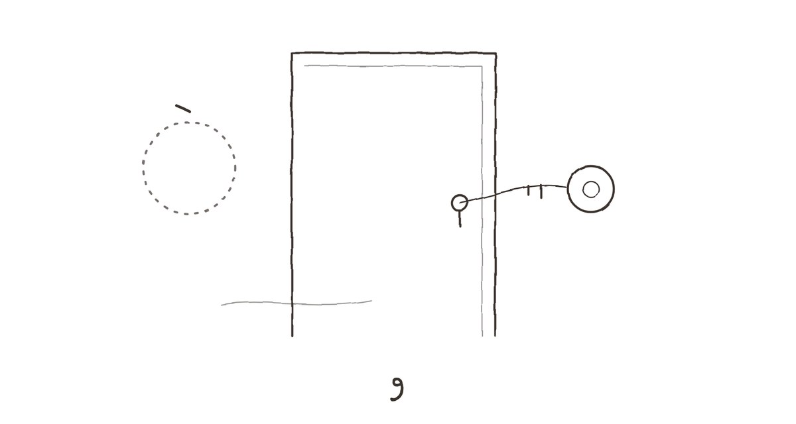
एक
आई गेल्यानंतर तीन महिन्यांनी मी त्या घराची चावी पहिल्यांदा स्वतःच्या हातानं फिरवली.
त्याआधी ती चावी कधी माझ्या खिशात नव्हती. घर आईचं होतं, दार आईचं होतं, आणि दार उघडायचं काम कायम आतून व्हायचं. मी बेल वाजवायचो, आत पावलांचा आवाज यायचा, आधी हळू, मग थोडा घाईचा — आणि मग कडी सरकण्याचा तो विशिष्ट, किंचित गंजलेला आवाज. त्या आवाजाची मला इतकी सवय होती की आज कुलपात चावी अडकली तेव्हा क्षणभर वाटलं, आतून कुणीतरी येईल, कडी सरकवेल, आणि म्हणेल, "आलास? बूट बाहेरच काढ, आत्ताच पुसलंय."
कुणी आलं नाही. चावी दुसऱ्या प्रयत्नात फिरली.
प्रभात रोडच्या आतल्या गल्लीतली ती तीन मजली इमारत — 'स्नेहकुंज' — मी शाळेत असतानाही जुनी वाटायची. आता ती जुनी वाटत नव्हती, ती थकलेली वाटत होती. जिन्यावरच्या लाल फरशा मधोमध झिजलेल्या, कठड्याचा लाकडी हात शेकडो तळव्यांनी गुळगुळीत झालेला. दुसऱ्या मजल्यावर डावीकडे आमचं दार. उजवीकडे, समोरासमोर, दुसरं दार — त्यावर पितळी पाटीऐवजी कागदावर हातानं लिहिलेलं नाव चिकटवलेलं होतं: रेवती देशपांडे. अक्षरं तिरकी, घाईत लिहिल्यासारखी, पण ठाम.
दार उघडलं आणि आतली हवा माझ्या अंगावर आली. बंद घरांना एक वास असतो — धूळ, जुनं कापड, आणि कशाचा तरी थांबलेला श्वास. पण त्या वासाखाली मला आईचा वास जाणवला. नारळाचं तेल, कापूर, आणि पावडरचा तो फिकट गुलाबी सुगंध जो ती गेली चाळीस वर्षं एकाच ब्रँडचा वापरत होती. वास माणसांपेक्षा जास्त काळ टिकतात, हे मला त्या क्षणी कळलं, आणि का कुणास ठाऊक, त्याचा राग आला.
मी दिवा लावला नाही. खिडक्यांचे पडदे बाजूला केले. ऑक्टोबरची दुपार होती, प्रकाश तिरका आणि पिवळसर, जमिनीवर लांब चौकोन पाडणारा. त्या चौकोनांत धुळीचे कण तरंगत होते, अगदी हळू, जणू त्यांनाही कुठे पोचायची घाई नव्हती.
हॉल तसाच होता. बसकी, हिरव्या कापडाची सोफा-खुर्ची, जिच्यावर आई दुपारी वर्तमानपत्र वाचता वाचता डुलकी काढायची. कोपऱ्यात टीव्ही, त्यावर हातानं विणलेलं पांढरं कव्हर. भिंतीवर बाबांचा फोटो — चंदनाचा हार आता सुकून तपकिरी झालेला. आणि त्या फोटोच्या शेजारी, थोडा खाली, एक रिकामा खिळा. तिथे कधी काय होतं, मला आठवेना. मी बराच वेळ त्या खिळ्याकडे बघत उभा राहिलो.
खरं तर मी इथे का आलो होतो, याचं उत्तर साधं होतं. घराचं काय करायचं ते ठरवायचं होतं. श्रीकांतनं — माझ्या कॉलेजपासूनच्या मित्रानं — एक ब्रोकर सुचवला होता. "प्रभात रोड आहे, अनिरुद्ध. जुनी बिल्डिंग असली तरी जागेला भाव आहे. रिडेव्हलपमेंटचं पण बोलणं चाललंय म्हणे. उगाच भावनांमध्ये अडकू नकोस." तो हे सांगत असताना मी मान डोलावली होती. भावनांमध्ये अडकणारा माणूस मी नव्हतो, असं मला तोपर्यंत वाटत होतं.
पण ते उत्तर अपुरं होतं. खरं कारण, जे मी स्वतःलाही नीट सांगितलं नव्हतं, ते असं होतं की बाणेरच्या माझ्या फ्लॅटमध्ये मला आता झोप लागत नव्हती. मीरा मुंबईला गेल्यापासून — एक वर्ष, दोन महिने — तो फ्लॅट मोठा झाला होता. खोल्या वाढल्या नव्हत्या, पण शांतता वाढली होती, आणि शांततेलाही आकार असतो. रात्री फ्रिजचा आवाज, लिफ्टचा आवाज, खालच्या रस्त्यावरून जाणाऱ्या बाइकचा आवाज — सगळे आवाज मला स्पष्ट ऐकू यायचे, आणि त्या सगळ्यांच्या मधोमध एक न येणारा आवाज. कुणाचा तरी कूस बदलण्याचा.
मी स्वयंपाकघरात गेलो. ओट्यावर स्टीलचे डबे रांगेत. प्रत्येकावर आईच्या हस्ताक्षरात चिठ्ठी — 'तूर डाळ', 'पोहे — जाड', 'साखर'. एका डब्यावर फक्त 'अनि' असं लिहिलं होतं. मी तो उघडला. आत बेसनाचे लाडू होते, कडक झालेले, कडांना पांढुरके. ती ते माझ्यासाठी करून ठेवायची, मी दर रविवारी यायचो तेव्हा द्यायला. शेवटच्या रविवारी मी आलो नव्हतो. काहीतरी साईट-व्हिझिट होती, किंवा मीराशी फोनवर वाद, किंवा नुसताच कंटाळा — आता आठवत नाही. आणि त्यानंतरच्या बुधवारी ती बाथरूममध्ये पडली.
मी डबा बंद केला. परत ठेवला. बरोबर त्याच जागी, त्याच रांगेत.
बेडरूममध्ये पलंग नीट आवरलेला होता. उशीवर अभ्रा, त्यावर क्रोशाची कड. आई गेल्यानंतर कुणीतरी इथली व्यवस्था लावली होती — मी नाही, हे नक्की. अंत्यसंस्कारांच्या दिवसांत मी फक्त कागदपत्रं, फोन, नातेवाईक, आणि भटजींच्या याद्या सांभाळल्या होत्या. घर कुणी आवरलं, हे विचारायचंही सुचलं नव्हतं.
बाहेर दार वाजलं. हलकंसं, दोनदा.
मी दार उघडलं तेव्हा समोर एक बाई उभी होती — चाळिशीची, सावळी, केस मागे एका सैलसर अंबाड्यात बांधलेले, ज्यातून दोन-तीन बटा सुटल्या होत्या. अंगावर फिकट निळा, सुती कुर्ता. हातात एक स्टीलचा डबा.
"तुम्ही अनिरुद्ध," ती म्हणाली. प्रश्न नव्हता तो.
"हो."
"मी रेवती. समोर राहते." तिनं डोळ्यांनी आपल्या दाराकडे इशारा केला. "खिडकीतून पडदे उघडलेले दिसले. आधी वाटलं, चोर वगैरे." ती किंचित हसली. हसताना तिचे डोळे हसले नाहीत, ते माझ्याकडे बघत राहिले — मोजत असल्यासारखे.
"चोर असता तर तुम्ही डबा घेऊन आला असता?"
"डबा तुमच्यासाठी नाही," ती म्हणाली. "तुमच्या आईचा आहे. त्या मला अधूनमधून आमटी द्यायच्या. डबा परत करायचा राहिला होता." तिनं तो पुढे केला. "धुवून ठेवलाय."
मी डबा घेतला. रिकामा, हलका, थंड.
"घर तुम्ही आवरलंत का?" मी विचारलं.
ती क्षणभर थांबली. "त्या दिवशी अँब्युलन्स गेल्यानंतर सगळं विस्कटलेलं होतं. गादी जमिनीवर ओढलेली, पाणी सांडलेलं. तुम्ही हॉस्पिटलमध्ये होतात. चावी माझ्याकडे होती."
"तुमच्याकडे चावी होती?"
"एक जास्तीची. त्यांनीच दिली होती. वर्षभरापूर्वी. म्हणाल्या, कधी काही झालं तर." ती बोलायची थांबली, जणू पुढचं वाक्य म्हणायचं की नाही ते तोलत होती. मग म्हणाली, "आणि झालं."
मला काय बोलावं सुचलं नाही. धन्यवाद म्हणावं, तर ते फार औपचारिक वाटलं असतं. माफ करा म्हणावं — कशासाठी? की माझ्या आईच्या घराची जास्तीची चावी माझ्याकडे नव्हती, आणि एका अनोळखी बाईकडे होती, यासाठी?
"चावी परत देऊ?" तिनं विचारलं.
"असू दे," मी म्हणालो. आणि लगेच वाटलं, हे मी का म्हटलं.
तिनं मान हलवली, जणू तिला हेच उत्तर अपेक्षित होतं. "मी बहुतेक घरीच असते. काम घरूनच करते. काही लागलं तर सांगा." आणि ती वळली.
"तुम्ही काय काम करता?" मी विचारलं — तिला थांबवण्यासाठी, असं नंतर मला वाटलं.
ती दारात थांबली, अर्धवट वळून. "भाषांतर. जर्मनमधून मराठीत, कधी इंग्रजीत. पुस्तकं, कधी कागदपत्रं. जे मिळेल ते."
"आईला माहीत होतं?"
या प्रश्नावर ती खरंच हसली — डोळ्यांसकट. "तुमच्या आईला माझ्याबद्दल बरंच काही माहीत होतं, अनिरुद्ध."
तिचं दार बंद झालं. मी डबा हातात घेऊन तसाच उभा राहिलो, जिन्यावरच्या त्या झिजलेल्या लाल फरशांकडे बघत. खालून कुणाच्या तरी कुकरची शिट्टी आली. तिसरी. मग चौथी.
मी आत आलो, डबा स्वयंपाकघरात त्या रांगेत ठेवला — 'अनि' लिहिलेल्या डब्याच्या शेजारी. आणि मग हॉलमध्ये येऊन त्या हिरव्या खुर्चीत बसलो, जिथे आई बसायची. खुर्ची माझ्या वजनानं करकरली. ती तिच्या वजनाला करकरायची नाही.
संध्याकाळ होईपर्यंत मी तिथेच बसून होतो. काहीच केलं नाही. ब्रोकरचा फोन आला, मी उचलला नाही. मीराचा मेसेज आला — 'सईची फी भरलीस का?' — मी तो वाचला, उत्तर दिलं नाही. खिडकीतला प्रकाश पिवळ्याचा केशरी झाला, केशरीचा राखाडी. आणि त्या रिकाम्या खिळ्याकडे बघताना मला अचानक आठवलं — तिथे एक आरसा होता. छोटा, गोल, नक्षीदार चौकटीचा. आई बाहेर निघताना त्यात बघून कुंकू नीट करायची.
तो आरसा कुठे गेला?
हा प्रश्न त्या रात्री मला बाणेरला परत जाईपर्यंत छळत राहिला. एका आरशासाठी. एका छोट्याशा, गोल, हरवलेल्या आरशासाठी. आणि मला कळलं नाही — किंवा कळलं, पण मान्य करायचं नव्हतं — की प्रश्न आरशाचा नव्हता.
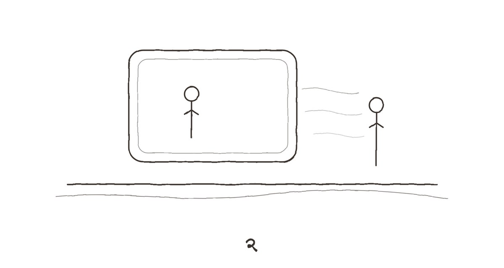
दोन
मीरा आणि मी वेगळे झालो, असं मी कधी कुणाला म्हटलं नाही. आम्ही वेगळे राहतो, असं म्हणायचो. या दोन वाक्यांमधलं अंतर फार लहान आहे, पण त्या अंतरात आम्ही दोघांनी एक वर्ष, दोन महिने काढले होते.
तिला मुंबईच्या एका संस्थेत नोकरी मिळाली होती — शहरी स्थलांतरितांच्या मुलांच्या शिक्षणावर काम करणारी संस्था. ती गेली पंधरा वर्षं पुण्यात एका कॉलेजमध्ये समाजशास्त्र शिकवत होती आणि गेली पाच वर्षं ती ते सोडायचं म्हणत होती. मी कधी गंभीरपणे घेतलं नव्हतं. माणसं अशी बोलतात, असं मला वाटायचं — 'मी सोडणार', 'मी जाणार', 'मला हे नको' — आणि मग रविवारी सकाळी चहा पिताना, वर्तमानपत्राची पानं उलटताना, ती वाक्यं हवेत विरून जातात.
पण मीराची वाक्यं विरली नाहीत. ती एका संध्याकाळी जेवताना म्हणाली, "मी ती ऑफर घेतेय."
मी भाजी वाढत होतो. चमचा हवेत थांबला. "कोणती?"
"तुला माहितेय कोणती."
मला माहीत होतं. तीन आठवड्यांपूर्वी तिनं सांगितलं होतं, मी 'बघू' म्हणालो होतो, आणि त्या 'बघू'मध्ये मी विषय बंद केला होता असं मला वाटलं होतं. माझी ती जुनी सवय होती — विषय बंद करण्याची. वाद न घालता, नकार न देता, फक्त एका शब्दानं दार लोटून घेण्याची. मीरा म्हणायची, तू भिंत नाहीस अनिरुद्ध, तू धुकं आहेस. भिंतीला निदान धडकता तरी येतं.
"आणि सई?" मी विचारलं.
"सई बंगलोरला आहे. ती दोन वर्षांनी परत येणार नाहीये, तुलाही माहितेय."
"आणि हे घर?"
तिनं माझ्याकडे पाहिलं. बराच वेळ. मग म्हणाली, "हे घर तुझंच आहे. नेहमीच होतं."
तेव्हा मला त्या वाक्याचा अर्थ कळला नव्हता. मला वाटलं, ती कायदेशीर अर्थानं बोलतेय — फ्लॅट माझ्या नावावर होता, लोन मी भरलं होतं. आता, आईच्या त्या जुन्या घरात त्या हिरव्या खुर्चीत बसून, मला वाटतं, ती दुसऱ्या अर्थानं बोलत होती. घराच्या भिंती माझ्या, फर्निचर माझ्या आवडीचं, सकाळची वेळापत्रकं माझ्या कामाप्रमाणे, शनिवार-रविवारचे बेत माझ्या थकव्याप्रमाणे. आणि मीरा? मीरा त्या घरात राहत होती, जसं कुणी पाहुण्यांच्या खोलीत राहतं — सामान नीट ठेवून, आवाज न करता, जाण्याची तयारी मनात ठेवून.
ती गेली त्या दिवशी आम्ही भांडलो नाही. मी तिला स्टेशनवर सोडायला गेलो. तिच्या दोन बॅगा होत्या — फक्त दोन. बाकीचं सामान, ती म्हणाली, नंतर बघू. 'नंतर बघू.' माझंच वाक्य, तिच्या तोंडून. मला ते टोचलं, पण मी काही बोललो नाही. डेक्कन क्वीनचा डबा, खिडकीजवळची जागा. ती आत बसली, मी प्लॅटफॉर्मवर उभा राहिलो. गाडी सुटण्याआधीचे ते पाच मिनिटं — ते सर्वात कठीण असतात. बोलायला काही उरलेलं नसतं, आणि निघून जाणं असभ्य वाटतं.
"पोचलीस की फोन कर," मी म्हणालो.
"हो."
"आणि जेवत जा नीट. तू कामात विसरतेस."
ती हसली. "अनिरुद्ध, मी पंचेचाळीस वर्षांची आहे."
"माहितेय."
गाडी हलली. तिनं हात हलवला नाही. मीही नाही. आम्ही फक्त एकमेकांकडे बघत राहिलो, जोपर्यंत खिडकी पुढे सरकली आणि तिचा चेहरा काचेवरच्या प्रतिबिंबात मिसळून गेला.
त्यानंतर आम्ही आठवड्यातून दोनदा फोनवर बोलायचो. मग एकदा. मग गरजेपुरतं. सईचे पैसे, गॅसचं बिल, बँकेतली कुठलीतरी सही. आमचे फोन व्यवहारी झाले, आणि व्यवहारात एक सुरक्षितता असते. तिथे कुणी विचारत नाही, 'तू कसा आहेस?' — आणि विचारलं तरी उत्तर अपेक्षित नसतं.
आई गेली तेव्हा मीरा आली. पहिल्या गाडीनं. तेराव्यापर्यंत राहिली. स्वयंपाकघर तिनं सांभाळलं, नातेवाईकांच्या चौकशा तिनं झेलल्या, आत्याबाईंच्या टोमण्यांना तिनं हसून उत्तरं दिली. रात्री आम्ही बाणेरच्या घरी एकाच पलंगावर झोपायचो, दोन टोकांना, मध्ये एका माणसाइतकी जागा सोडून. एका रात्री, मला वाटतं दहाव्या दिवशी, मला जाग आली तेव्हा ती उठून बसली होती, अंधारात खिडकीबाहेर बघत.
"झोप येत नाही?" मी विचारलं.
"तुझ्या आई मला एकदा म्हणाल्या होत्या," ती खिडकीकडेच बघत म्हणाली, "की अनिरुद्ध अगदी त्याच्या बाबांसारखा आहे. सगळं आत ठेवतो. बाहेर काहीच येऊ देत नाही. आणि मग एक दिवस तुम्हाला कळतं की तुम्ही ज्याच्याबरोबर तीस वर्षं राहिलात, त्याला तुम्ही ओळखतच नव्हतात."
"आई असं म्हणाली?"
"हो. आपलं लग्न झाल्यावर दोन वर्षांनी. मी तेव्हा हसले होते. मला वाटलं, सासूबाई उगाच नाटकी बोलतायत." ती माझ्याकडे वळली. अंधारात तिचा चेहरा दिसत नव्हता, फक्त आकार. "त्या नाटकी बोलत नव्हत्या, अनिरुद्ध."
मी काही बोललो नाही. मी कूस बदलली आणि डोळे मिटले. आणि हे — हे कूस बदलणं, डोळे मिटणं — हेच तर ती सांगत होती, हे मला त्या क्षणी कळत होतं, आणि तरीही मी ते केलं. कारण मला दुसरं काय करायचं, ते माहीत नव्हतं.
तेराव्यानंतर ती परत गेली. यावेळी मी स्टेशनवर गेलो नाही. ती कॅबनं गेली. जाताना दारात म्हणाली, "आईंचं घर घाईनं विकू नकोस."
"का?"
"कारण तू नेहमी घाईनं निर्णय घेतोस, जे घ्यायला नको ते. आणि जे घ्यायला हवेत ते कधीच घेत नाहीस."
तेव्हा मला राग आला होता. आता, आईच्या घरात, संध्याकाळच्या त्या राखाडी उजेडात, मला तो राग आठवला आणि हसू आलं. ती बरोबर होती. ती बहुतेकदा बरोबर असायची. आणि बरोबर असणाऱ्या माणसाबरोबर राहणं किती थकवणारं असतं, हे फक्त चुकीच्या माणसालाच कळतं.
मी फोन काढला. तिचा मेसेज — 'सईची फी भरलीस का?' — अजून उत्तराशिवाय पडून होता. मी टाईप केलं: 'भरली. आज आईच्या घरी आलो होतो.' मग 'आईच्या घरी' खोडलं आणि 'प्रभात रोडला' लिहिलं. मग तेही खोडलं. शेवटी फक्त 'भरली' पाठवलं.
पाच मिनिटांनी उत्तर आलं: 'थँक्स.'
आणि मग, आणखी दोन मिनिटांनी, एक दुसरा मेसेज: 'तू ठीक आहेस ना?'
मी तो मेसेज बराच वेळ बघत राहिलो. स्क्रीन विझली. मी परत लावली. परत विझली. मग मी फोन उलटा करून टेबलावर ठेवला, आणि स्वतःला समजावलं की उद्या सकाळी उत्तर देईन, जेव्हा डोकं ताजं असेल.
दुसऱ्या दिवशी सकाळी मी उत्तर दिलं नाही. त्यानंतरच्याही नाही.
धुकं, ती म्हणाली होती. भिंत नाही, धुकं.
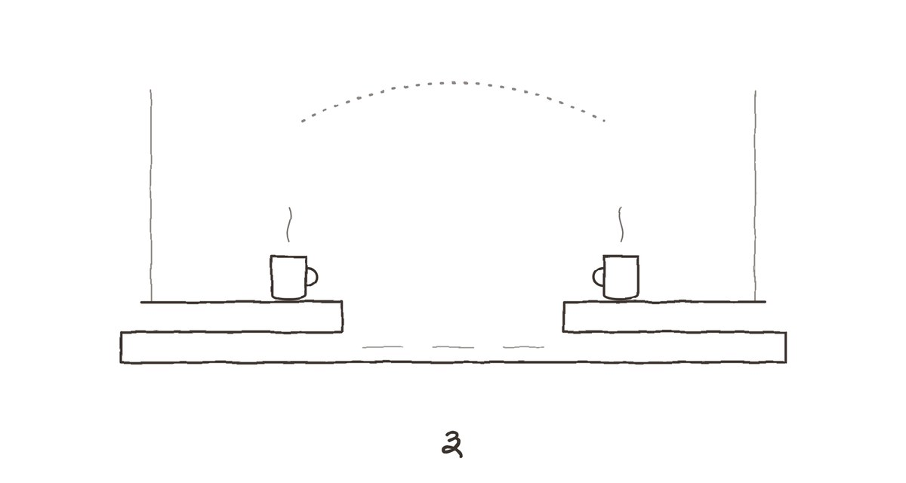
तीन
पुढच्या शनिवारी मी पुन्हा प्रभात रोडला गेलो. यावेळी कारण शोधावं लागलं नाही. शुक्रवारी रात्री बाणेरच्या फ्लॅटमध्ये फ्रिजचा आवाज ऐकत पडलो होतो, तेव्हा मला कळलं की उद्या सकाळी मी तिथे जाणार आहे. ठरवलं नाही; कळलं.
बरोबर एक छोटी बॅग घेतली. दोन कपडे, टूथब्रश, लॅपटॉप. एका रात्रीपुरतं, असं मी स्वतःला सांगितलं.
जिन्यात रेवतीचं दार उघडं होतं. आतून टाइपिंगचा आवाज येत होता — जलद, थांबून थांबून, मग पुन्हा जलद. जणू कुणीतरी एखाद्या अडचणीच्या वाक्याशी झगडत होतं. मी आमच्या दारापाशी चावी काढत असताना आवाज थांबला.
"आज राहताय?" तिनं दारात येत विचारलं. तिनं माझ्या हातातल्या बॅगेकडे पाहिलं होतं.
"एक रात्र."
"गादीला ऊन दाखवा आधी. तीन महिने बंद आहे. ओल धरली असेल."
ती आईच्या सुरात बोलली, असं मला वाटलं. मग वाटलं, नाही — आईच्या सुरात नाही, आईचंच वाक्य. आई हेच म्हणायची, मी कधी तिच्याकडे राहायला आलो की. 'गादीला ऊन दाखव आधी.' जणू या घरात काही वाक्यं भिंतींमध्ये राहिली होती, आणि जो कुणी जवळ राहत असे त्याच्या तोंडून ती बाहेर पडत.
मी गादी गच्चीवर नेली. गच्ची इमारतीची सामायिक होती — कपडे वाळत घालायच्या दोऱ्या, कोपऱ्यात पाण्याच्या टाक्या, आणि एका बाजूला कुंड्यांची रांग. त्या कुंड्यांत तुळस, गवती चहा, आणि एक कोमेजलेला मोगरा. ती आईची होती, हे मला सांगावं लागलं नाही. पण त्यांतली माती ओलसर होती. कुणीतरी पाणी घालत होतं.
मी खाली आलो तेव्हा रेवती तिच्या दारात चहाचे दोन कप घेऊन उभी होती.
"तुळशीला तुम्ही पाणी घालता?"
"रोज सकाळी." तिनं एक कप माझ्या हातात दिला. "त्यांनी सांगितलं नव्हतं. पण त्या आजारी पडल्या तेव्हा आठवडाभर मी घातलं, आणि मग सवय झाली."
आम्ही जिन्याच्या पायरीवर बसलो. ती तिच्या उंबरठ्यावर, मी माझ्या. मध्ये पाच फुटांचा पॅसेज, झिजलेल्या लाल फरशा. खालून कुणाचातरी रेडिओ — सकाळच्या भक्तिगीतांचा कार्यक्रम संपून बातम्या लागल्या होत्या.
"तुम्ही आणि आई," मी म्हणालो, "रोज भेटायचा?"
तिनं कप दोन्ही हातांत धरला. "रोज संध्याकाळी. सहा ते सात. त्या चहा करायच्या, मी बिस्किटं आणायचे — त्यांना मारी आवडायची, साधी. आणि मग आम्ही इथेच बसायचो. या पायऱ्यांवर."
"कशाबद्दल बोलायचा?"
"बोलायचो कमी. त्या मला वाचायला सांगायच्या."
"काय?"
"मी जे भाषांतर करत असे ते. आधी जर्मनमध्ये एखादा परिच्छेद वाचायचा, मग माझं मराठी भाषांतर. त्यांना जर्मन एक अक्षरही कळायचं नाही. पण त्या म्हणायच्या, आधी मूळ ऐकव. शब्द कळत नाहीत, पण वजन कळतं." रेवती थांबली. "मग मराठी ऐकल्यावर त्या सांगायच्या — इथे तुझं भाषांतर हलकं झालंय. किंवा, इथे तू जास्त बोललीस. आणि बहुतेक वेळा त्या बरोबर असायच्या."
मी तिच्याकडे पाहिलं. माझी आई — जी सातवी पास होती, जिनं आयुष्यभर बाबांच्या ऑफिसच्या फायली, माझे गृहपाठ, आणि महिन्याचे हिशोब याशिवाय फारसं काही वाचलं नाही, असं मला वाटायचं — ती एका जर्मन कादंबरीच्या मराठी भाषांतराची चूक काढायची?
"तुम्हाला आश्चर्य वाटतंय," रेवती म्हणाली.
"हो."
"मलाही वाटलं होतं. पहिल्यांदा." ती हसली — पुन्हा ते मोजणारं हसू नाही, आता थोडं मोकळं. "तुमच्या आईंना शब्दांबद्दल एक विलक्षण कान होता, अनिरुद्ध. त्या म्हणायच्या, मी आयुष्यभर माणसांचं न बोललेलं ऐकत आले. बोललेलं ऐकणं त्यापेक्षा सोपं आहे."
माझ्या घशात काहीतरी अडकलं. मी चहाचा घोट घेतला. चहा गोड होता — फार गोड, आईसारखा. रेवतीनं साखर आईच्या मापानं घातली होती.
दुपारी मी कपाटं उघडायला सुरुवात केली. ते काम मी गेले तीन महिने पुढे ढकलत होतो. ब्रोकरला घर दाखवायचं तर ते रिकामं हवं, असं श्रीकांत म्हणाला होता. रिकामं — म्हणजे आईचे कपडे, भांडी, फोटो, बाबांच्या जुन्या फाइली, माझी शाळेची प्रमाणपत्रं जी तिनं प्लास्टिकच्या पिशवीत जपून ठेवली होती — हे सगळं कुठेतरी नेऊन टाकायचं.
पहिलं कपाट आईच्या साड्यांचं होतं. मी दार उघडलं आणि तिथेच थांबलो. साड्या घड्या घालून रांगेत ठेवलेल्या — सुती, रोजच्या, फिकट रंगांच्या. त्यांच्या वर एका कप्प्यात रेशमी, सणावारांच्या. आणि प्रत्येक घडीत कडुलिंबाची पानं, सुकलेली. कपाटातून कडवट, स्वच्छ वास आला.
मी एक साडी उचलली. हिरवी, काठाला बारीक सोनेरी नक्षी. मला आठवलं — ती माझ्या लग्नात तिनं नेसली होती. फोटोत ती मीराच्या शेजारी उभी आहे, हसत, आणि तिचा हात मीराच्या खांद्यावर आहे. मी नाही, मीरा.
मी साडी परत ठेवली. कपाट बंद केलं. आणि बराच वेळ बंद कपाटाकडे बघत बसलो.
हे काम आज होणार नव्हतं.
संध्याकाळी सहा वाजता दार वाजलं. मी उघडलं. रेवती — हातात मारी बिस्किटांचा पुडा.
"सवय," ती म्हणाली, जरा ओशाळून. "सहा वाजले की पाय आपोआप इकडे वळतात. तुम्हाला त्रास होत असेल तर —"
"नाही," मी म्हणालो. आणि मग, काय करावं न कळून, "चहा करतो."
मी स्वयंपाकघरात गेलो. गॅस लावला. पातेलं, पाणी, चहापत्ती. आणि मग साखरेच्या डब्यासमोर थांबलो. किती घालायची? आई किती घालायची? मला माहीत नव्हतं. चाळीस वर्षं तिच्या हातचा चहा प्यायलो, आणि मला माप माहीत नव्हतं.
"दोन चमचे, गच्च भरून," रेवती मागून म्हणाली. ती स्वयंपाकघराच्या दारात उभी होती. "आणि आलं नाही. त्यांना आल्याचा चहा आवडायचा नाही. तुम्हाला आवडतो, म्हणून तुम्ही आलात की घालायच्या."
मी तिच्याकडे वळलो. "तुम्हाला हे सगळं कसं माहीत?"
रेवतीनं क्षणभर विचार केला. मग म्हणाली, "कारण दोन वर्षं मी रोज संध्याकाळी त्यांच्या स्वयंपाकघरात उभी होते. आणि त्या रोज तुमच्याबद्दल बोलायच्या."
पातेल्यातलं पाणी उकळू लागलं. मी चहापत्ती टाकली. साखर — दोन चमचे, गच्च भरून. आलं नाही.
आम्ही पायऱ्यांवर बसलो. तिनं तिची वही उघडली नाही, काही वाचून दाखवलं नाही. आम्ही फक्त बसलो. जिन्याच्या खिडकीतून गल्लीतला गुलमोहर दिसत होता, आणि त्यापलीकडे संध्याकाळचं आकाश — राखाडी, त्यावर केशरी रेघा.
"त्या माझ्याबद्दल काय बोलायच्या?" मी शेवटी विचारलं.
रेवतीनं माझ्याकडे पाहिलं नाही. ती गुलमोहराकडे बघत राहिली. "ते मी तुम्हाला आज सांगणार नाही," ती म्हणाली.
"का?"
"कारण तुम्ही अजून ऐकायला तयार नाही." ती उठली, कप उचलला. "आणि कारण ते त्यांचं बोलणं होतं. ते पुढे पोचवायचं की नाही, हे मला अजून ठरवायचंय."
ती तिच्या घरात गेली. दार हळूच लावलं. मी पायरीवर बसून राहिलो, हातात थंड झालेला कप घेऊन.
त्या रात्री मी आईच्या पलंगावर झोपलो. गादीला उन्हाचा वास येत होता. आणि बाणेरला गेले कित्येक महिने न लागलेली झोप — ती इथे, या जुन्या, करकरणाऱ्या पलंगावर, एका क्षणात लागली.
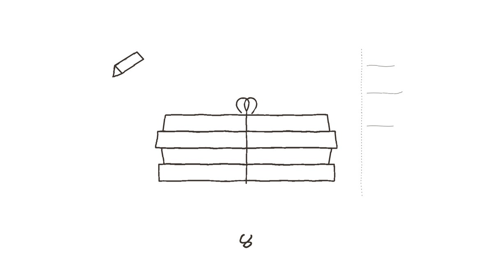
चार
एक रात्र दोन झाल्या. दोनाच्या चार. नोव्हेंबरच्या पहिल्या आठवड्यात मी ऑफिसला सांगितलं की पुढचे काही आठवडे मी घरून काम करणार आहे. ते खोटं नव्हतं. फक्त कोणत्या घरातून, ते मी सांगितलं नाही.
सकाळी आठ वाजता आईच्या स्वयंपाकघरातल्या ओट्यावर लॅपटॉप ठेवून मी मीटिंग्जना हजर राहायचो. स्क्रीनवर चौकोनांत चेहरे — कंपनीचे, क्लायंटचे — आणि माझ्या मागे, कॅमेऱ्यात, स्टीलच्या डब्यांची रांग. 'तूर डाळ', 'पोहे — जाड', 'अनि'. एका मीटिंगमध्ये एका तरुण सहकाऱ्यानं विचारलं, "सर, ते मागे 'अनि' काय लिहिलंय?" मी म्हणालो, "माझं नाव." तो हसला, त्याला वाटलं मी विनोद केला.
दुपारी मी कपाटांकडे वळायचो. रोज थोडं. एक कप्पा, एक खण. साड्यांचं कपाट मी अजूनही बंद ठेवलं होतं. पण बाबांच्या जुन्या फायली, वीजबिलांचे गठ्ठे, विम्याची कागदपत्रं — ते सगळं मी लावलं. रद्दीवाल्याला दिलं. त्यात एक प्रकारचं समाधान होतं — कागदं, ज्यांच्याशी माझं काहीच नातं नव्हतं, ज्यांना टाकताना हात थरथरत नव्हते.
बेडरूममधल्या लोखंडी कपाटाच्या खालच्या खणात त्या वह्या होत्या.
पंचवीस-तीस असतील. एकावर एक रचलेल्या, सुतळीनं बांधलेल्या. जुन्या, स्वस्त, शाळेतल्या वह्यांसारख्या — तपकिरी कव्हर, आत रेघा. प्रत्येक कव्हरवर आईच्या हस्ताक्षरात एक वर्ष. सर्वात जुनी — एकोणीसशे ब्याऐंशी. सर्वात नवी — यावर्षीची, अर्धी भरलेली.
मला वाटलं, डायऱ्या. आणि माझं हृदय एक ठोका चुकलं — भीतीनं की उत्सुकतेनं, मला कळलं नाही.
त्या डायऱ्या नव्हत्या. त्या हिशोबाच्या वह्या होत्या.
प्रत्येक पानावर तारीख, आणि खाली रकाने. 'दूध — ४ रु.' 'भाजी — १२ रु.' 'अनिची वही — ३ रु.' 'गॅस — ५८ रु.' आईचं अक्षर गोल, नीटनेटकं, आकडे उजवीकडे एका रेषेत. महिन्याच्या शेवटी बेरीज, आणि खाली लाल शाईनं — 'शिल्लक' किंवा 'तूट'.
मी पहिली वही पानपान उलटत गेलो. आणि मग माझ्या लक्षात आलं की प्रत्येक दिवसाच्या खर्चाच्या खाली, पानाच्या अगदी कडेला, एक छोटी ओळ होती. पेन्सिलनं, फिकट, इतकी बारीक की आधी दिसलीच नाही.
'अनि आज पहिल्यांदा सायकल शिकला. पडला. रडला नाही.'
'यांचं ऑफिसमध्ये भांडण. रात्री जेवले नाहीत.'
'पाऊस. खिडकीतून बघत बसले. भाजी करपली.'
'आज वाटलं, गाणं म्हणावं. कोणी नव्हतं घरात. म्हटलं नाही.'
मी ती शेवटची ओळ पुन्हा वाचली. आणि पुन्हा. 'कोणी नव्हतं घरात. म्हटलं नाही.' जणू गाणं म्हणायला कुणीतरी ऐकणारं हवं होतं — किंवा कुणीतरी परवानगी देणारं.
त्या दुपारी मी कपाटाशी जमिनीवर बसून राहिलो. वह्या एकेक उघडत. वर्षं उलटत. ब्याऐंशी, चौऱ्याऐंशी, सत्त्याऐंशी. माझं बालपण आकड्यांत आणि पेन्सिलच्या ओळींत.
'अनिला ताप. रात्रभर जागी. हे दौऱ्यावर.'
'अनिनं विचारलं, आई तू कधी लहान होतीस का. काय सांगू?'
'आज लायब्ररीत गेले. सभासद व्हायला. फी ३० रु. परत आले. पुढच्या महिन्यात.'
पुढच्या महिन्याच्या हिशोबात लायब्ररी नव्हती. त्याच्या पुढच्याही नाही. एका वर्षानंतर, एका कोपऱ्यात: 'लायब्ररीची फी आता ५० झाली.'
मी वही बंद केली. डोळे चोळले. बाहेर गल्लीत संध्याकाळची वर्दळ सुरू झाली होती — मुलांचे आवाज, कुणाच्या तरी स्कूटरचा हॉर्न, भाजीवाल्याची आरोळी.
आई लायब्ररीची सभासद कधीच झाली नाही, हे मला माहीत होतं. घरात पुस्तकं नव्हती — बाबांची काही इंग्रजी कायद्याची, माझी शाळेची, आणि देव्हाऱ्याजवळ एक गीता आणि एक पोथी. मला वाटायचं, आईला वाचायची आवड नाही. आणि तिनं ते कधी खोटं ठरवलं नाही.
सहा वाजता रेवती आली. मी अजूनही जमिनीवर बसलो होतो, भोवती वह्यांचा पसारा. तिनं दारातूनच पाहिलं आणि क्षणभर थांबली.
"सापडल्या," ती म्हणाली. प्रश्न नाही.
"तुम्हाला माहीत होत्या?"
ती आत आली आणि माझ्यापासून थोड्या अंतरावर, भिंतीला टेकून जमिनीवर बसली. तिनं एक वही उचलली नाही. फक्त त्यांच्याकडे पाहिलं.
"त्यांनी सांगितलं होतं की त्या हिशोब लिहितात. एके दिवशी मला म्हणाल्या, रेवती, माझं सगळं आयुष्य त्या वह्यांत आहे, पण कुणी वाचलं तरी त्याला फक्त भाजीचे भाव दिसतील."
"मला कडेच्या ओळी दिसल्या."
तिनं माझ्याकडे पाहिलं — लांब, थांबलेलं. "मग तुम्ही वाचलंत."
"हो."
"त्यांना वाटायचं, तुम्ही कधी वाचणार नाही."
मी हातातली वही खाली ठेवली. "त्यांना हे आवडलं असतं? मी वाचलेलं?"
रेवतीनं उत्तर द्यायला वेळ घेतला. खिडकीतला प्रकाश आता पूर्ण राखाडी झाला होता, आणि खोलीत दिवा नव्हता. तिचा चेहरा अर्धवट सावलीत होता.
"मला वाटतं," ती शेवटी म्हणाली, "त्यांनी त्या वह्या टाकून का दिल्या नाहीत, याचा विचार करा. चाळीस वर्षं. ती घरं बदलली नाहीत, पण कपाटं बदलली, रंगकाम झालं, बाबा गेल्यावर पसारा आवरला गेला. वह्या प्रत्येक वेळी पुन्हा त्या खणात गेल्या. एखाद्या गोष्टीला माणूस जेव्हा इतकं जपतो, अनिरुद्ध, तेव्हा तो फक्त स्वतःसाठी जपत नसतो."
त्या रात्री मी झोपलो नाही. बेडरूमचा दिवा लावून, आईच्या पलंगावर मांडी घालून, मी वह्या वाचत राहिलो. एकोणीसशे नव्वद. ब्याण्णव. पंच्याण्णव. मी कॉलेजला गेलो, आणि वह्यांत माझं नाव कमी झालं. 'अनि आज उशिरा आला.' 'अनिचा निकाल. पहिला वर्ग.' 'अनि म्हणतो, आई तुला काय कळतं.'
ती शेवटची ओळ वाचून मी थांबलो. मला ते वाक्य आठवत नव्हतं. पण मी ते म्हटलं असणार. एकोणिसाव्या वर्षी, कुठल्यातरी गोष्टीवरून — कदाचित एखादी मुलगी, कदाचित एखादा मित्र, कदाचित नुसताच राग. आणि आईनं ते वाक्य घेतलं, घडी घातली, आणि पेन्सिलनं एका हिशोबाच्या वहीच्या कडेला ठेवून दिलं. तीस वर्षं.
पहाटे साडेचारला मी दोन हजार पाचच्या वहीत पोचलो. माझं लग्न झालं त्याच्या आसपासची.
'आज मीरा आली. मुलगी हुशार आहे. अनिला बोलतं करेल का?'
'मीरानं विचारलं, आई तुम्हाला काय आवडतं. चाळीस वर्षांत कोणी विचारलं नव्हतं. उत्तर आलं नाही.'
आणि मग, काही पानांनंतर, एका महिन्याच्या बेरजेखाली, लाल शाईत नाही, पेन्सिलनं:
'मीरेला सांगितलं, हा त्याच्या बाबांसारखा आहे. बोलला नाही तरी असतो. फक्त थांबावं लागतं. खूप थांबावं लागतं. मी थांबले. तिनं थांबू नये असं वाटतं.'
मी वही बंद केली. खिडकीबाहेर अंधार फिकट होत होता. गच्चीवर कुठेतरी एक कावळा ओरडला.
'तिनं थांबू नये असं वाटतं.'
माझ्या आईनं, माझ्या लग्नाच्या दुसऱ्या वर्षी, माझ्या बायकोला मला सोडून जायची परवानगी दिली होती. आणि मीरा — मीरा वीस वर्षं थांबली होती.
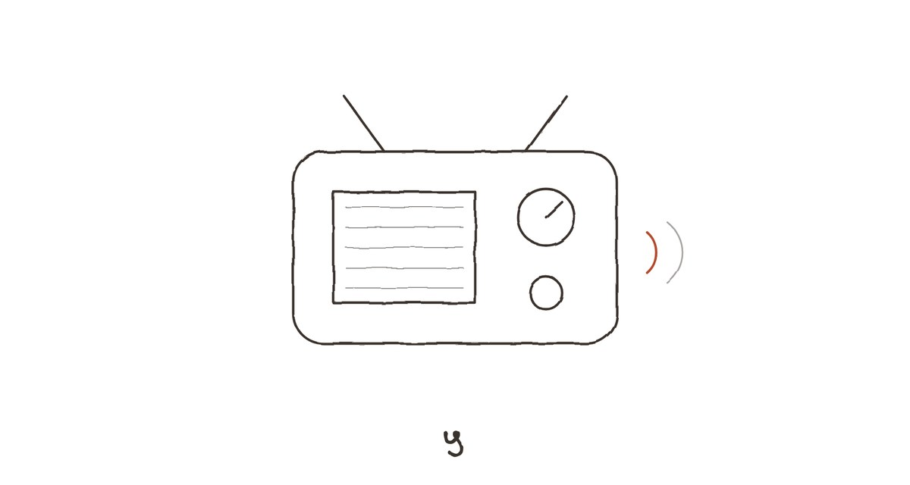
पाच
सई न सांगता आली.
शुक्रवारी रात्री साडेदहा वाजता दारावरची बेल वाजली. मी हॉलमध्ये बसून एक वही वाचत होतो — एकोणीसशे अठ्ठ्याऐंशी, ज्या वर्षी बाबांची बदली नाशिकला होता होता राहिली. बेल वाजली तेव्हा मला वाटलं रेवती असेल. पण रेवती रात्री कधी येत नसे.
दार उघडलं. समोर सई — पाठीवर एक मोठी सॅक, हातात फोन, केस आखूड कापलेले, जे मी आधी पाहिले नव्हते.
"बाबा."
"सई? तू — इथे? कशी?"
"बसनं. बंगलोरहून. चौदा तास." ती आत आली, सॅक जमिनीवर टाकली, आणि सरळ आईच्या हिरव्या खुर्चीत जाऊन बसली. जणू ती तिची जागा होती. "आजीच्या घराचा पत्ता मला पाठ आहे. बाणेरला फोन केला, तुम्ही उचलला नाही. मग आईला केला. ती म्हणाली, तो बहुतेक प्रभात रोडला असेल. मी विचारलं, तुला कसं माहीत? ती म्हणाली, मला माहीत आहे."
मी दारातच उभा राहिलो. मीराला माहीत होतं. मी तिला काही सांगितलं नव्हतं — तो 'भरली' इतकाच मेसेज, आणि त्यानंतरचं मौन. तरी तिला माहीत होतं.
"जेवलीस?"
"बसमध्ये वडापाव."
"थांब, काहीतरी करतो."
सई हसली. "तुम्ही? स्वयंपाक?"
"गेले तीन आठवडे करतोय."
तिनं माझ्याकडे वेगळ्या नजरेनं पाहिलं — जणू एखाद्या ओळखीच्या माणसाच्या चेहऱ्यावर एक नवी रेघ दिसावी. मग ती उठली आणि माझ्या मागोमाग स्वयंपाकघरात आली.
मी पोहे केले. तेच मला चांगले जमायचे. सई ओट्याला टेकून उभी राहिली, डब्यांची रांग पाहत. 'अनि' लिहिलेल्या डब्यावर तिची नजर थांबली.
"हे अजून इथेच आहेत?"
"हो."
"आत लाडू?"
"होते. कडक झालेत."
तिनं डबा उघडला, एक लाडू काढला, आणि मी काही बोलायच्या आत तोंडात टाकला. कुडुम्. "खरंच कडक," ती म्हणाली, तोंड भरलेलं असताना. "पण चव तीच आहे." आणि मग, अचानक, तिचे डोळे भरून आले. तिनं डोकं वळवलं, खिडकीकडे पाहू लागली.
मी गॅस बंद केला. पोहे ताटात घातले. तिच्याजवळ गेलो, आणि — क्षणभर काय करावं न कळून — तिच्या खांद्यावर हात ठेवला. ती माझ्याकडे वळली आणि तिनं माझ्या छातीत डोकं खुपसलं. एकोणीस वर्षांची, माझ्याहून थोडी कमी उंचीची, आणि लहानपणी जशी रडायची तशीच — आवाज न करता, फक्त खांदे हलत.
"मी अंत्यसंस्काराला येऊ शकले नाही," ती म्हणाली, माझ्या शर्टमध्ये.
"परीक्षा होती तुझी. आजीला कळलं असतं तर तिनं —"
"आजीला कळत होतं, बाबा. मी तिला दर रविवारी फोन करायचे. दर रविवारी. आणि शेवटच्या रविवारी मी केला नाही, कारण मित्रांबरोबर बाहेर होते."
शेवटचा रविवार. ज्या रविवारी मीही आलो नव्हतो.
मी तिला काही सांगितलं नाही. तिला धरून उभा राहिलो, स्वयंपाकघरात, पोहे थंड होत असताना.
सई तीन दिवस राहिली. तिनं कॉलेजला काय सांगितलं, मी विचारलं नाही. ती आईच्या पलंगावर झोपली, मी हॉलमधल्या दिवाणावर. सकाळी उठलो तेव्हा ती गच्चीवर होती — तुळशीला पाणी घालत. रेवती शेजारी उभी होती, आणि त्या दोघी काहीतरी बोलत होत्या, खालच्या आवाजात, जणू त्यांची जुनी ओळख होती.
"तुम्ही एकमेकींना ओळखता?" मी नंतर रेवतीला विचारलं.
"व्हिडिओ कॉलवर," रेवती म्हणाली. "रविवारी सई आजींना फोन करायची तेव्हा मी बऱ्याचदा तिथे असायचे. आजींना फोनचा कॅमेरा कसा धरायचा ते कळायचं नाही. मी धरायचे."
माझ्या आईच्या आयुष्याच्या शेवटच्या दोन वर्षांत एक संपूर्ण जग उभं राहिलं होतं — संध्याकाळचे चहा, जर्मन परिच्छेद, रविवारचे व्हिडिओ कॉल — आणि मी त्या जगाच्या दाराबाहेर, दर रविवारी दोन तास येऊन, लाडवांचा डबा घेऊन निघून जाणारा पाहुणा होतो.
दुसऱ्या दिवशी संध्याकाळी सई आणि मी वैशालीत गेलो. ती लहान असताना आई तिला इथे आणायची — दर सुट्टीत. सई अजूनही तेच मागवायची: एक प्लेट एसपीडीपी, एक कोल्ड कॉफी. मी फिल्टर कॉफी मागवली.
सई बराच वेळ स्ट्रॉनं कॉफी ढवळत राहिली. मग म्हणाली, "तुम्ही आणि आई — तुमचं काय चाललंय?"
हा प्रश्न तिनं आधी कधी विचारला नव्हता. मीरा मुंबईला गेली तेव्हा सई बंगलोरला होती; आम्ही दोघांनी तिला एकत्र फोन करून सांगितलं होतं — आईला नवी नोकरी मिळाली आहे, ती काही दिवस मुंबईला राहणार आहे. 'काही दिवस.' एक वर्ष, दोन महिने.
"आम्ही वेगळे राहतो," मी म्हणालो.
"ते मला माहितेय, बाबा." तिनं स्ट्रॉ बाजूला ठेवली. "मी विचारलं, काय चाललंय."
मी कॉफीचा कप उचलला. खाली ठेवला. "मला माहीत नाही, सई."
"तुम्ही तिला विचारलंत?"
"काय?"
"काहीही. ती कशी आहे. तिला काय हवंय. ती परत येणार का. काहीही."
मी उत्तर दिलं नाही. बाजूच्या टेबलवर कॉलेजची चार मुलं मोठ्यांदा हसत होती. एकानं काहीतरी विनोद केला असावा.
सई पुढे झुकली. "बाबा, आजी मला काय म्हणायची माहितेय? ती म्हणायची, तुझे बाबा एखाद्या बंद रेडिओसारखे आहेत. आत सगळी स्टेशनं आहेत, सगळी गाणी. फक्त कुणी बटण दाबत नाही. आणि ते स्वतः दाबत नाहीत."
"आजी असं म्हणायची?"
"आणि ती म्हणायची, आजोबाही तसेच होते. आणि ती चाळीस वर्षं बटण शोधत राहिली." सई थांबली. "आणि मग मी तिला विचारलं होतं, आजी, तू कधी कंटाळलीस का? ती म्हणाली — हो. एकदा. खूप."
"मग?"
"मग काय, ते मला सांगायचं राहिलं." सईनं खिडकीबाहेर पाहिलं. एफसी रोडवर संध्याकाळची गर्दी, दिवे लागत होते. "ती म्हणाली, पुढच्या वेळी सांगते. आणि पुढची वेळ आलीच नाही."
तिसऱ्या दिवशी सकाळी सई निघाली. स्टेशनवर नाही — बसस्टँडवर. स्वारगेट. सॅक पाठीवर, हातात आईच्या स्वयंपाकघरातला एक छोटा स्टीलचा डबा — त्यात मी रात्री केलेले पोहे. ते कडक होतील, मी म्हणालो. ती म्हणाली, असू दे.
बस लागली. सई चढायच्या आधी वळली.
"बाबा, एक विचारू?"
"विचार."
"आजीच्या भिंतीवरचा तो आरसा कुठे गेला? बाबांच्या — आजोबांच्या फोटोशेजारचा? गोल, नक्षीचा?"
मी तिच्याकडे पाहत राहिलो. "तुला आठवतो तो?"
"मला आठवतो? बाबा, लहानपणी मी त्याच्यासमोर उभी राहून आजीची टिकली लावून बघायचे. आजी म्हणायची, हा आरसा माझ्या आईचा. माझं लग्न झालं तेव्हा तिनं दिला. म्हणाली, रोज एकदा स्वतःकडे बघत जा, नाहीतर संसारात स्वतःचा चेहरा विसरशील." सई क्षणभर थांबली. "कुठे आहे तो?"
"माहीत नाही," मी म्हणालो. "मी शोधतोय."
बसचा कंडक्टर ओरडला. सई चढली. खिडकीतून हात हलवला — हसत, पण डोळे लाल.
बस गेली. मी स्वारगेटच्या त्या धूर, गर्दी आणि आरोळ्यांच्या मध्ये बराच वेळ उभा राहिलो.
'रोज एकदा स्वतःकडे बघत जा, नाहीतर संसारात स्वतःचा चेहरा विसरशील.'
मी शेवटचा आरशात स्वतःकडे केव्हा पाहिलं होतं — दाढी करण्यापलीकडे, केस विंचरण्यापलीकडे? स्वतःकडे?
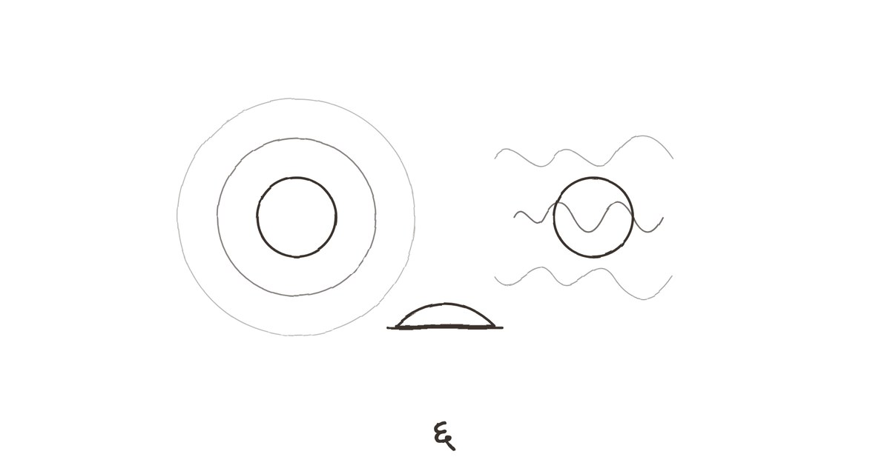
सहा
श्रीकांत नेहमी असाच येतो — आधी आवाज, मग माणूस.
रविवारी सकाळी अकरा वाजता जिन्यातून त्याचा आवाज आला: "अनिरुद्ध! अरे, ही बिल्डिंग आहे की पुरातत्त्व खात्याचं संग्रहालय? लिफ्ट नाही, दिवे नाहीत —" आणि मग दारावर तीन जोरदार थापा. बेल असूनही. श्रीकांत बेल वाजवत नाही; त्याला वाटतं, बेल ही परक्या माणसांसाठी असते.
मी दार उघडलं. तो धापा टाकत उभा होता — पोट थोडं पुढे आलेलं, डोक्यावरचे केस मागे सरकलेले, अंगात चमकदार निळा टी-शर्ट ज्यावर एका मॅरेथॉनचं नाव होतं, जी तो कधी धावला नव्हता. हातात एक मोठी पिशवी.
"वहिनींनी पाठवलंय," तो म्हणाला, पिशवी माझ्या हातात कोंबत. "पुरणपोळ्या. म्हणाली, तो एकटा काय खात असेल देव जाणे."
माधवी वहिनी. श्रीकांतची बायको. पंचवीस वर्षं त्यांचं लग्न झालं होतं, आणि त्या पंचवीस वर्षांत मी त्यांना कधी शांत बसलेलं पाहिलं नव्हतं. ते भांडायचे, हसायचे, एकमेकांना चारचौघांत टोमणे मारायचे, आणि रात्री एकाच ताटात जेवायचे. मीरा एकदा म्हणाली होती, त्यांचं घर एखाद्या चालू रेडिओसारखं आहे — कधी स्टेशन बदलतं, कधी खरखर येते, पण तो कधी बंद होत नाही.
रेडिओ. सईचे शब्द आठवले. बंद रेडिओ.
श्रीकांत आत आला. हॉलमध्ये उभा राहून त्यानं सगळीकडे पाहिलं — डोळे बारीक करून, एखाद्या व्यापाऱ्यासारखे. "हं. हॉल चौदा बाय बारा असेल. बेडरूम दोन? एक? दीड. किचन लहान आहे. पण प्रभात रोड, अनिरुद्ध. प्रभात रोड."
"चहा घेशील?"
"घेईन. पण आधी हे सांग." तो हिरव्या खुर्चीत बसला. खुर्ची करकरली — माझ्यापेक्षा जास्त जोरात. "ब्रोकरचे तीन फोन तू उचलले नाहीस. त्यानं मला फोन केला. मी त्याला सांगितलं होतं, माझा मित्र आहे, व्यवस्थित डील कर. आता तो मला विचारतोय, तुमचा मित्र आहे की भूत?"
मी स्वयंपाकघरात गेलो. चहा केला — दोन चमचे साखर, गच्च भरून. श्रीकांतला आलं आवडतं, म्हणून आलं घातलं. आईसारखं.
चहा घेऊन आलो तेव्हा श्रीकांत भिंतीवरच्या रिकाम्या खिळ्याकडे पाहत होता.
"इथे काहीतरी होतं ना?"
"आरसा."
"मग?"
"माहीत नाही. गेला कुठेतरी."
श्रीकांतनं कप घेतला, एक घोट घेतला, आणि भुवया उंचावल्या. "अरे, हा काकूंचा चहा आहे. अगदी तसाच." तो माझ्याकडे पाहत राहिला. "तू काय करतोयस इथे, अनिरुद्ध?"
"घर आवरतोय."
"तीन आठवडे? या दीड खोल्या आवरायला? मी माझा अख्खा बंगला दोन दिवसांत आवरला होता, शिफ्ट होताना." तो पुढे झुकला. "खरं सांग."
खरं काय सांगणार? की मी रोज रात्री आईच्या हिशोबाच्या वह्यांतल्या पेन्सिलच्या ओळी वाचतो? की संध्याकाळी सहा वाजता शेजारची एक बाई मारी बिस्किटं घेऊन येते आणि आम्ही पायरीवर बसून काहीच बोलत नाही? की बाणेरला मला झोप लागत नाही आणि इथे लागते?
"मला अजून ठरवता येत नाहीये," मी म्हणालो.
"काय ठरवायचंय? सोसायटी रिडेव्हलपमेंटला जातेय. बिल्डरनं ऑफर दिलीय — चाळीस टक्के जास्त जागा, नवीन बिल्डिंग, लिफ्ट, पार्किंग, आणि वर कॉर्पस. पुढच्या महिन्यात जनरल बॉडी मीटिंग आहे. एकतर तू ते फ्लॅट घे आणि भाड्यानं दे, किंवा आत्ताच विक. दोन्ही चांगले पर्याय. तिसरा पर्याय — इथे बसून जुन्या भिंतींकडे बघत राहणं — तो पर्याय नाही, अनिरुद्ध. तो अनिर्णय आहे."
तो बरोबर होता. श्रीकांत नेहमी व्यावहारिक बाबतींत बरोबर असतो. कॉलेजमध्ये त्यानं माझे फॉर्म भरले होते, नोकरीच्या पहिल्या मुलाखतीसाठी मला शर्ट उधार दिला होता, बाणेरचा फ्लॅट घेताना लोनचे कागद त्यानं तपासले होते. आणि मीरा गेली तेव्हा — त्यानं एकदाच फोन केला होता. "काय झालं?" मी म्हणालो, "काही नाही, तिला नोकरी मिळालीय." तो क्षणभर गप्प राहिला, मग म्हणाला, "ठीक आहे. पण कधी बोलायचं असेल तर — मी आहे." आणि त्यानंतर त्यानं कधी विचारलं नाही. मी कधी बोललो नाही.
"श्रीकांत," मी म्हणालो, "तू आणि वहिनी — तुम्ही कधी वेगळं राहायचा विचार केलात?"
तो चहाचा कप तोंडाशी नेत होता. तिथेच थांबला. मग हळूच खाली ठेवला.
"हे कुठून आलं?"
"नुसतंच विचारलं."
श्रीकांतनं माझ्याकडे बराच वेळ पाहिलं. त्याच्या चेहऱ्यावरचा तो नेहमीचा, गोंगाटी, व्यावहारिक भाव हळूहळू निवळला. आणि त्याखाली एक वेगळा श्रीकांत दिसला — जो मी कॉलेजमध्ये, एखाद्या रात्री उशिरा, हॉस्टेलच्या गच्चीवर पाहिला होता.
"दोनदा," तो म्हणाला.
मी काही बोललो नाही.
"पहिल्यांदा लग्नानंतर पाच वर्षांनी. माझा धंदा बुडत होता, मी रोज रात्री पिऊन यायचो. ती एका सकाळी बॅग भरून माहेरी गेली. तीन आठवडे. मी रोज तिच्या माहेरी जायचो, दाराबाहेर उभा राहायचो. ती बाहेर यायची नाही. एकविसाव्या दिवशी आली. म्हणाली, दारू सोड, नाहीतर मी परत येणार नाही. मी सोडली." तो थांबला. "दुसऱ्यांदा — दुसऱ्यांदा मी जाणार होतो. मुलगा दहावीत होता. मला वाटलं, आमचं आता काहीच उरलं नाही. फक्त हिशोब, शाळेच्या फी, आणि टीव्ही. मी एक फ्लॅट बघून आलो होतो, भाड्याचा."
"मग?"
"मग मी तिला सांगितलं. एका रात्री. सरळ. मला वाटतं, आपलं संपलंय." श्रीकांत हसला — कोरडं. "ती रडली नाही, भांडली नाही. ती म्हणाली, ठीक आहे, पण आधी मला सांग, शेवटचं तू मला केव्हा विचारलंस की मी कशी आहे? आणि मला आठवेना, अनिरुद्ध. वर्षं. वर्षं झाली होती."
हॉलमध्ये शांतता होती. खिडकीतून गल्लीतल्या मुलांचा क्रिकेटचा आवाज येत होता — 'आउट! आउट नाही!'
"मग आम्ही बोललो," श्रीकांत म्हणाला. "त्या रात्री पहाटेपर्यंत. आणि मग पुढचे सहा महिने, रोज रात्री. भांडलो, रडलो, एक काउन्सेलरकडे पण गेलो — कुणाला सांगू नकोस. आणि आम्ही राहिलो. ते सोपं होतं म्हणून नाही. आम्ही दोघांनी ठरवलं म्हणून." त्यानं माझ्याकडे सरळ पाहिलं. "लोकांना वाटतं, आमचं घर गोंगाटाचं आहे. तो गोंगाट आम्ही कमावलाय, अनिरुद्ध. त्याआधी शांतता होती. आणि ती शांतता — ती मारक होती."
मी उठलो आणि खिडकीजवळ गेलो. खाली गल्लीत मुलं क्रिकेट खेळत होती, एक मुलगा बॅट जमिनीवर आपटत होता. मी त्यांच्याकडे पाहत राहिलो — श्रीकांतकडे पाठ करून.
"मी तिला वर्षभरात एकदाही विचारलं नाही," मी म्हणालो. "ती कशी आहे."
"माहितेय," श्रीकांत म्हणाला.
मी वळलो. "तुला कसं माहीत?"
"कारण ती माधवीला विचारते. तुझ्याबद्दल. महिन्यातून एकदा फोन करते. तो जेवतो का, तो झोपतो का, तो कुणाशी बोलतो का." श्रीकांत उठला, कप टेबलावर ठेवला. "आणि माधवी तिला सांगते — माहीत नाही, तो आमच्याशीही बोलत नाही."
तो गेल्यावर मी पुरणपोळ्यांची पिशवी उघडली. आत अॅल्युमिनियम फॉइलमध्ये गुंडाळलेल्या सहा पोळ्या, एका छोट्या डबीत तूप, आणि एक चिठ्ठी — माधवी वहिनींच्या अक्षरात:
'अनिरुद्ध भाऊजी — एक मीराला पाठवा. तिला माझ्या पुरणपोळ्या आवडतात. पत्ता तुम्हाला माहीत आहे. नसेल तर विचारा.'
मला पत्ता माहीत नव्हता. मुंबईत ती कुठे राहते — कोणत्या उपनगरात, कोणत्या इमारतीत, कोणत्या मजल्यावर — मला माहीत नव्हतं. मी कधी विचारलं नव्हतं. मला वाटलं होतं, विचारलं तर ते जाणं खरं होईल. न विचारल्यानं ते तात्पुरतं राहील.
मी फोन काढला. व्हॉट्सअॅप उघडलं. मीराचा तो शेवटचा मेसेज — 'तू ठीक आहेस ना?' — तीन आठवड्यांपूर्वीचा, अजूनही उत्तराशिवाय.
मी टाईप करू लागलो. 'माधवी वहिनींनी पुरणपोळ्या पाठवल्यात. तुझ्यासाठी एक. पत्ता' — आणि मग थांबलो. खोडलं. पुन्हा लिहिलं.
मग सगळं खोडलं.
पोळ्या फ्रिजमध्ये ठेवल्या. सहाच्या सहा. आणि सहा वाजता दार वाजलं, तेव्हा मी रेवतीला एक दिली — मारी बिस्किटांऐवजी.
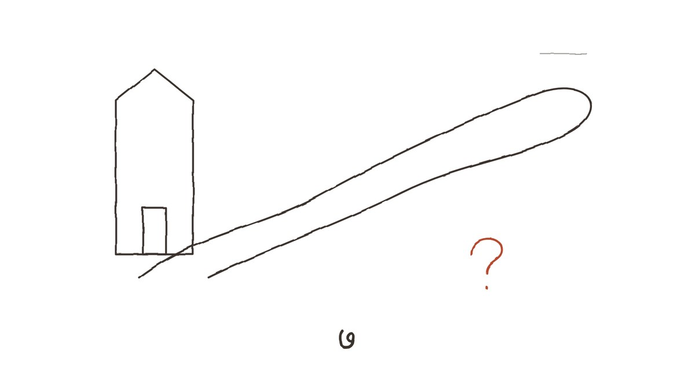
सात
एकोणीसशे सत्त्याऐंशीच्या वहीत सहा आठवडे आईचं अक्षर नव्हतं.
मी ते आधी पाहिलं होतं, पहिल्या रात्री वाचताना, आणि पुढे गेलो होतो. वाटलं, आजारी असेल, किंवा कंटाळा आला असेल, किंवा कुणीतरी पाहुणे आले असतील. पण सईच्या त्या वाक्यानंतर — 'हो. एकदा. खूप.' — मी ती वही पुन्हा काढली.
जुलैच्या तिसऱ्या आठवड्यापर्यंत आईचे गोल, नीटनेटके आकडे. आणि मग, एकोणीस जुलैपासून, वेगळं अक्षर. उभं, टोकदार, पानाच्या रेघांना न जुमानणारं. बाबांचं. मी ते अक्षर ओळखत होतो — माझ्या प्रगतिपुस्तकावर त्यांची सही, वाढदिवसाच्या कार्डांवर 'शुभाशीर्वाद — बाबा', आणि त्यांच्या कपाटातल्या फायलींवरची लेबलं.
पण इथे ते अक्षर अडखळत होतं. 'दूध — ४' आणि पुढे रुपये लिहायला विसरलेले. 'भाजी' — आणि आकडा नाही. एका दिवशी फक्त 'अनिला डबा — बाहेरून'. दुसऱ्या दिवशी 'अनिसाठी चप्पल' आणि त्याची किंमत खोडून पुन्हा लिहिलेली. महिन्याच्या शेवटी बेरीज नाही. फक्त एक रेघ.
आणि पानाच्या कडेला — आईच्या त्या पेन्सिलच्या ओळींच्या जागी — एकच ओळ, बाबांच्या अक्षरात, शाईनं, जणू खोडता येऊ नये म्हणून:
'ती परत येईल का?'
मी ती ओळ बराच वेळ पाहत राहिलो. माझे बाबा. जे चाळीस वर्षं संध्याकाळी सातला ऑफिसमधून यायचे, चहा घ्यायचे, वर्तमानपत्र वाचायचे, रात्री साडेनऊला जेवायचे, आणि दहाला झोपायचे. जे कधी आईला 'अगं' याशिवाय दुसरं काही म्हणत नसत. जे माझ्या लग्नात फोटो काढताना हसले नव्हते, कारण त्यांना वाटायचं हसणं हा पोरकटपणा आहे. त्या बाबांनी एका हिशोबाच्या वहीच्या कडेला एक प्रश्न लिहिला होता — आणि तो प्रश्न कुणाला विचारला होता, ते मला कळत नव्हतं.
मला सात वर्षांचा असतानाचा तो पावसाळा आठवायचा प्रयत्न केला. काहीच आठवेना. मग, हळूहळू, एखाद्या धुरकट काचेतून काहीतरी दिसावं तसं: एक मोठी, ओली छत्री. बाबांचा हात धरून शाळेत जाणं — आई नेहमी न्यायची, बाबा नाही. डब्यात रोज तेच — ब्रेड-जॅम. आणि एक रात्र, जेव्हा मी झोपेतून उठलो आणि स्वयंपाकघरात दिवा दिसला, आणि बाबा तिथे एकटे बसले होते — हातात काहीतरी, कदाचित एखादं पत्र — आणि मी विचारलं, आई कधी येणार? आणि ते म्हणाले — काय म्हणाले? मला आठवत नाही. फक्त त्यांचा आवाज आठवतो. नेहमीपेक्षा मऊ. आणि मग त्यांनी मला उचलून पलंगावर नेलं — जे ते कधी करत नसत.
मला नेहमी वाटायचं, त्या वर्षी आई आजोळी गेली होती. आजी आजारी होती, किंवा मावशीचं बाळंतपण होतं. कुणीतरी तसं सांगितलं असेल, आणि मी ते स्वीकारलं असेल, जसं मुलं सगळं स्वीकारतात.
बाबांच्या अक्षरातल्या सहा आठवड्यांनंतर, सप्टेंबरच्या पहिल्या आठवड्यात, आईचं अक्षर परत आलं. 'दूध — ४ रु.' जणू काहीच झालं नव्हतं. पण त्या पहिल्या पानाच्या कडेला, पेन्सिलनं, इतकी फिकट की दिव्याजवळ नेऊनच वाचता आली, एक ओळ:
'परत आले. अनिसाठी? की माझ्यासाठी? माहीत नाही. यांनी काही विचारलं नाही. मीही सांगितलं नाही.'
त्या संध्याकाळी रेवती आली तेव्हा मी ती वही तिच्यासमोर उघडून ठेवली. ते पान.
तिनं वाचलं. मग माझ्याकडे पाहिलं. आणि मला कळलं की तिला हे माहीत होतं.
"सांगा," मी म्हणालो. "यावेळी नको म्हणू नका."
रेवती पायरीवर बसली. आज ती तिच्या उंबरठ्यावर नाही, आमच्या उंबरठ्यावर बसली — माझ्या शेजारी. तिनं गुडघ्यांभोवती हात गुंडाळले.
"कोल्हापूरला," ती म्हणाली. "त्यांची एक मैत्रीण होती, शाळेतली. ती तिथे एका शाळेत मुख्याध्यापिका होती. त्या वर्षी तिनं तुमच्या आईंना पत्र लिहिलं — आमच्याकडे डी.एड.ची एक जागा आहे, प्रौढांसाठी, सहा महिन्यांचा कोर्स. तू ये. तुला मुलं आवडतात, तू शिकवू शकतेस. तुमच्या आई तेव्हा चौतीस वर्षांच्या होत्या."
"आणि त्या गेल्या."
"त्या गेल्या. तुमच्या बाबांना एक चिठ्ठी ठेवून. सहा महिन्यांसाठी. अनिला सांभाळा, मी दर शनिवारी फोन करेन." रेवती थांबली. "त्या म्हणाल्या, ते लिहिताना त्यांचे हात थरथरत होते. आयुष्यात पहिल्यांदा त्यांनी स्वतःसाठी काहीतरी ठरवलं होतं."
"मग त्या सहा आठवड्यांत का परत आल्या?"
रेवतीनं माझ्याकडे पाहिलं — थेट, न टाळता.
"तुम्हाला ताप आला होता. टायफॉइड. तुमच्या बाबांनी फोन केला नाही — त्यांना वाटलं, सांगितलं तर ती अपराधी वाटेल, आणि ती अपराधीपणानं परत आली तर ते त्यांना नको होतं. पण शेजारच्या काकूंनी कोल्हापूरला ट्रंक कॉल केला. तुमच्या आई त्याच रात्रीच्या एसटीनं निघाल्या."
मला तो ताप आठवला. काहीसा. पांढरी भिंत, कडू औषध, आणि कुणाचातरी थंड हात माझ्या कपाळावर. मला वाटायचं तो हात आईचा होता. तो आईचाच होता — पण ती तो हात घेऊन कोल्हापूरहून आली होती, एक अर्धवट राहिलेलं आयुष्य मागे सोडून.
"त्या परत कोल्हापूरला गेल्या नाहीत," मी म्हणालो.
"नाही. तुम्ही बरे झालात, आणि मग — मग त्या म्हणाल्या, परत जायचं धैर्य गोळा करायला वेळ लागला, आणि तोपर्यंत कोर्स संपला. आणि मग पुढचं वर्ष आलं, आणि त्याच्या पुढचं." रेवतीनं पायरीवरची धूळ बोटानं सारखी केली. "त्या म्हणायच्या, एकदा परत आलं की परत जाणं फार कठीण असतं. जायचं धैर्य एकदाच येतं. दुसऱ्यांदा ते कर्जासारखं वाटतं."
बराच वेळ आम्ही गप्प होतो. जिन्याच्या खिडकीतून गुलमोहराच्या फांद्या — आता बहुतेक पानं गळलेली — काळ्या रेघांसारख्या आकाशावर दिसत होत्या.
"त्यांनी हे तुम्हाला का सांगितलं?" मी विचारलं. "मला नाही. बाबांनाही — बाबांनाही त्या कधी बोलल्या नाहीत, त्यांनी लिहिलंय. तुम्हाला का?"
रेवती हसली. पण ते हसू दुःखी होतं.
"कारण मी त्यांच्या कोल्हापूरची गोष्ट जगत होते, अनिरुद्ध. उलटी." तिनं श्वास घेतला. "मी बारा वर्षं जर्मनीत होते. लग्न करून गेले. माझा नवरा चांगला माणूस होता — आहे. पण तिथे मी रोज सकाळी उठायचे आणि मला वाटायचं, मी कुणाच्यातरी दुसऱ्याच्या आयुष्यात उठलेय. एके दिवशी मी विमानाचं तिकीट काढलं. एकेरी. आणि त्याला एक चिठ्ठी ठेवली." तिनं माझ्याकडे पाहिलं. "मी परत गेले नाही. तुमच्या आई गेल्या. आम्ही दोघी एकमेकींच्या न घेतलेल्या रस्त्यांवर उभ्या होतो. आणि म्हणून आम्ही बोलू शकलो."
मी तिच्याकडे पाहत राहिलो. तिच्या अंबाड्यातून सुटलेल्या त्या बटा. तिचे हात, गुडघ्यांभोवती गुंडाळलेले. ही बाई — जी माझ्या आईची शेवटची, खरी मैत्रीण होती — तिचीही एक कथा होती, जी मी कधी विचारली नव्हती.
"आणि माझ्याबद्दल?" मी शेवटी विचारलं. "तुम्ही म्हणाला होतात, त्या रोज माझ्याबद्दल बोलायच्या. तुम्ही अजून ठरवताय, सांगायचं की नाही."
रेवती उठली. उंबरठ्यावर उभी राहिली, तिच्या दाराकडे तोंड करून. मग वळली.
"त्या म्हणायच्या," ती हळू आवाजात म्हणाली, "माझा अनि मी गेल्यावर इथे येईल. मला शोधत. तेव्हा त्याला सांग — थांबणं हा गुण नाही, रेवती. ती फक्त सवय आहे. मी त्याला ती सवय लावली. आता त्याला ती मोडायला सांग."
तिचं दार बंद झालं.
मी पायरीवर बसून राहिलो, हातात सत्त्याऐंशीची वही, उघडी, त्या पानावर — 'ती परत येईल का?' — जिथे बाबांनी, आयुष्यात एकदाच, एक प्रश्न लिहिला होता, जो त्यांनी कधी मोठ्यानं विचारला नाही.
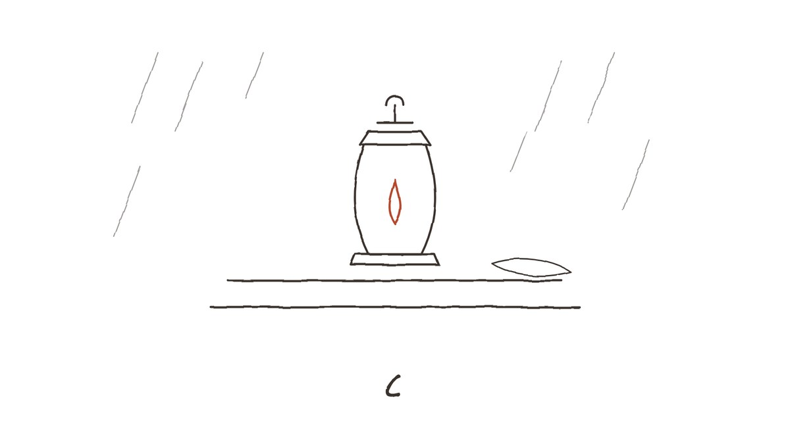
आठ
नोव्हेंबरच्या मध्यात अवकाळी पाऊस आला.
दुपारपासून आकाश जड होतं — पिवळसर-राखाडी, एखाद्या जुन्या जखमेसारखं. चार वाजता वारा सुटला, गल्लीतल्या गुलमोहराच्या उरल्यासुरल्या पानांचा पाऊस पडला, आणि मग खरा पाऊस. जाड, तिरके थेंब, खिडक्यांच्या काचांवर दगडासारखे आदळणारे. गच्चीवरून पाणी जिन्यात झिरपू लागलं. आणि साडेपाचला दिवे गेले.
मी अंधारात बसलो होतो. लॅपटॉपची बॅटरी संपत आली होती, फोनवर दहा टक्के. आईच्या स्वयंपाकघरात मेणबत्त्या कुठे असतात, हे मला माहीत नव्हतं. देव्हाऱ्याजवळ एक निरांजन होतं, पण त्यात तेल नव्हतं.
सहा वाजता दार वाजलं. रेवती — हातात एक कंदील. जुना, काचेचा, रॉकेलचा.
"तुमच्याकडे मेणबत्ती नसणार, हे मला माहीत होतं," ती म्हणाली. "तुमच्या आईंच्याही नसायच्या. दिवे गेले की त्या माझ्याकडे यायच्या."
कंदिलाचा उजेड पिवळा, थरथरणारा होता. त्यात जिन्याच्या भिंतींवर आमच्या सावल्या मोठ्या, वाकड्या पडल्या. आम्ही नेहमीसारखे पायरीवर बसलो — कंदील मधोमध, पॅसेजच्या त्या झिजलेल्या लाल फरशांवर. बाहेर पावसाचा आवाज सलग होता, एखाद्या मोठ्या धबधब्यासारखा.
आज चहा नव्हता — गॅस होता, पण कुणीच उठलं नाही.
"तुमचा नवरा," मी म्हणालो. "जर्मनीतला. तो कधी आला तुम्हाला शोधत?"
रेवतीनं कंदिलाकडे पाहिलं. "एकदा. पहिल्या वर्षी. इथे, या दारापर्यंत. मी दार उघडलं, तो बाहेर उभा होता. एक तास आम्ही इथे पायरीवर बसून बोललो — जर्मनमध्ये. शेजारचे लोक दारं किलकिली करून पाहत होते." ती हसली. "तुमच्या आईंनी त्याला चहा दिला. त्याला मराठी एक शब्द येत नव्हता, त्यांना जर्मन एक शब्द येत नव्हता. पण त्या दोघांनी अर्धा तास एकमेकांशी काहीतरी बोललं — हातवारे करून, हसून. तो जाताना मला म्हणाला, तुझी शेजारीण तुला माझ्यापेक्षा जास्त ओळखते."
"आणि?"
"आणि तो गेला. आम्ही अजूनही वर्षातून दोनदा ईमेल करतो. वाढदिवसाला. आणि नववर्षाला." ती थांबली. "घटस्फोट झाला नाही. कागदपत्रं कुणी पाठवली नाहीत. आम्ही दोघंही — आम्ही दोघंही तुमच्यासारखे आहोत, अनिरुद्ध. निर्णय टाळणारे. फक्त आम्ही तो एका खंडाच्या अंतरावरून टाळतो."
पावसाचा जोर वाढला. जिन्याच्या खिडकीतून पाण्याचे शिंतोडे आत येत होते. रेवतीनं ओढणी खांद्याभोवती घट्ट गुंडाळली.
"थंडी वाजतेय?" मी विचारलं.
"थोडी."
मी उठलो, आत गेलो, आणि अंधारात चाचपडत आईच्या कपाटातून एक शाल काढली. कपाट उघडताना कडुलिंबाचा तो कडवट वास आला. शाल कोणती होती, ते कळलं नाही — लोकरीची, मऊ. मी ती बाहेर आणून रेवतीच्या खांद्यावर घातली.
कंदिलाच्या उजेडात मी पाहिलं — ती आईची हिरवी शाल होती. माझ्या लग्नात तिनं हिरव्या साडीवर घेतलेली.
रेवतीनं ती ओळखली. तिचा हात शालीवर थांबला. "ही —"
"असू दे," मी म्हणालो.
बराच वेळ आम्ही काहीच बोललो नाही. पाऊस. कंदिलाची ज्योत. दूरवरून कुठूनतरी एक कुत्रा भुंकत होता.
आणि मग मला जाणवलं — या पायरीवर, या कंदिलाच्या उजेडात, या बाईशेजारी बसून मला जे वाटतंय, ते गेल्या कित्येक वर्षांत मला वाटलं नव्हतं. शांतता. पण बाणेरच्या फ्लॅटमधली ती रिकामी, मारक शांतता नाही. भरलेली. जणू दोन माणसांमधली जागा रिकामी नसून त्यात काहीतरी ठेवलेलं आहे — एखादी न बोललेली, पण दोघांनाही माहीत असलेली गोष्ट.
मी तिच्याकडे पाहिलं. तिनंही माझ्याकडे पाहिलं. कंदिलाची ज्योत तिच्या डोळ्यांत लहानशी, दुहेरी दिसत होती.
"रेवती —"
"नको," ती म्हणाली. हळू, पण ठाम.
मी थांबलो.
तिनं शाल खांद्यावरून काढली नाही. पण ती थोडी मागे सरकली — इंचभर, तिच्या उंबरठ्याकडे. "मला कळतंय तुम्हाला काय वाटतंय, अनिरुद्ध. कारण मलाही ते वाटतंय. हा पाऊस, हा कंदील, ही पायरी — हे सगळं फार सोपं आहे. फार सोयीचं."
"सोयीचं?"
"तुम्ही तुमच्या आईच्या घरात आहात. त्यांच्या शालीत मी आहे. आणि तुम्हाला वाटतंय, ती जी जागा रिकामी झालीय — त्यांची, मीराची — ती इथे, या पॅसेजमध्ये भरून निघू शकते." तिनं माझ्याकडे सरळ पाहिलं. "पण मी तुमची आई नाही. आणि मी मीरा नाही. आणि जर आज तुम्ही इकडे वळलात, तर तुम्ही पुन्हा तेच कराल जे तुम्ही आयुष्यभर केलं — जे कठीण आहे त्याकडून सोप्याकडे पळाल. कोल्हापूरहून परत येणं सोपं होतं, अनिरुद्ध. तिथे राहणं कठीण होतं."
माझ्या छातीत काहीतरी दुखलं. पण ते दुःख नव्हतं. ते कदाचित — ओळख होती. एखाद्या गोष्टीची, जी इतकी वर्षं माझ्या समोर होती आणि मी पाहत नव्हतो.
"तुमच्या आईंनी मला तुम्हाला सांभाळायला सांगितलं नव्हतं," रेवती म्हणाली, आता मऊ आवाजात. "त्यांनी मला तुम्हाला एक गोष्ट सांगायला सांगितली होती. मी ती सांगितली. आता उरलेलं तुमचं आहे."
ती उठली. शाल काढली, नीट घडी घातली, आणि माझ्या मांडीवर ठेवली. कंदील उचलला — मग थांबली, आणि तो पुन्हा माझ्या पायरीवर ठेवला.
"हा तुमच्याकडे ठेवा," ती म्हणाली. "माझ्याकडे दुसरा आहे."
तिचं दार बंद झालं.
मी कंदील घेऊन आत आलो. हॉलमध्ये, हिरव्या खुर्चीत बसलो. शाल मांडीवर. कंदिलाच्या उजेडात भिंतीवरचा बाबांचा फोटो आणि त्याच्या शेजारचा तो रिकामा खिळा — दोन्हींच्या सावल्या लांब पडल्या होत्या.
फोन काढला. सात टक्के बॅटरी.
व्हॉट्सअॅप. मीराचा मेसेज — 'तू ठीक आहेस ना?' — चार आठवड्यांपूर्वीचा.
मी टाईप केलं. यावेळी मी वाक्य मनात तोललं नाही. खोडलं नाही. आईच्या पेन्सिलच्या ओळींसारखं — जे वाटलं, ते.
'नाही. मी ठीक नव्हतो. अजूनही पूर्ण नाही. गेला महिनाभर मी आईच्या घरी राहतोय. तिच्या हिशोबाच्या वह्या वाचतोय. त्यात तू आहेस. तिनं तुला एक गोष्ट सांगितली होती, लग्नानंतर, हे मला आत्ता कळलं. आणि मला कळलं की मी तुला वर्षभरात एकदाही विचारलं नाही, तू कशी आहेस. मीरा, तू कशी आहेस? आणि — तुझा पत्ता काय आहे? माधवी वहिनींनी तुझ्यासाठी पुरणपोळी पाठवलीय. ती आता कडक झालीय. पण मला ती तुला पाठवायचीय.'
सेंड दाबलं. फोन पाच टक्क्यांवर. मी तो उलटा करून टेबलावर ठेवला नाही. हातात धरून बसलो, स्क्रीनकडे बघत.
एक निळी टिक. दुसरी.
आणि मग — 'टायपिंग...'
थांबलं. पुन्हा 'टायपिंग...'
थांबलं.
फोन बंद झाला. बॅटरी संपली.
मी अंधारात, कंदिलाच्या उजेडात, एका मृत फोनकडे पाहत बसून राहिलो. बाहेर पाऊस हळूहळू ओसरत होता. आणि मला हसू आलं — मोठ्यानं, एकट्यानं, आईच्या रिकाम्या घरात. वीस वर्षं मी उत्तरं टाळली, आणि आज, जेव्हा मी पहिल्यांदा प्रश्न विचारला, तेव्हा उत्तर वाचायला माझ्याकडे पाच टक्केही उरले नव्हते.
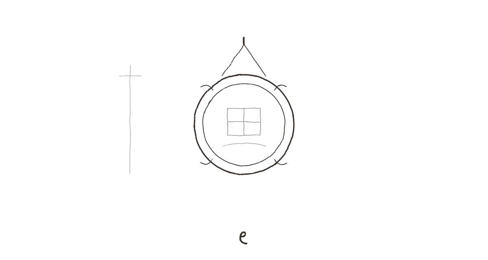
नऊ
दिवे सकाळी सात वाजता आले. मी फोन चार्जिंगला लावला आणि तो सुरू होईपर्यंत स्वयंपाकघरात येरझारा घालत राहिलो — ओट्यापासून खिडकीपर्यंत, खिडकीपासून ओट्यापर्यंत. डब्यांची रांग. 'अनि'. स्क्रीन उजळली. व्हॉट्सअॅप.
मीराचा मेसेज. रात्री अकरा वाजून चाळीस मिनिटांचा. लांब नव्हता.
'मी शनिवारी पुण्याला येतेय. आईंच्या घरी भेटू. पुरणपोळी आणू नकोस पाठवायला. मी खाईन तिथेच.'
आणि त्याखाली, वेगळा मेसेज, बारा वाजून पाच मिनिटांचा:
'मी ठीक आहे, अनिरुद्ध. बहुतेक दिवस. विचारलंस म्हणून सांगते.'
शनिवारपर्यंत चार दिवस होते. त्या चार दिवसांत मी घर आवरलं — पहिल्यांदा, खरंच. ब्रोकरसाठी नाही. मीरासाठीही नाही, असं मी स्वतःला सांगितलं, आणि ते खोटं आहे हे मला माहीत होतं.
मी जमिनी पुसल्या. आईचा पोछा कुठे असतो, ते रेवतीनं दाखवलं — बाथरूमच्या मागे, एका खिळ्यावर. मी खिडक्यांच्या काचा पुसल्या. गच्चीवरच्या कुंड्यांतली वाळलेली पानं काढली. मोगऱ्याला, जो अजूनही कोमेजलेला होता, थोडं खत घातलं — रेवतीनं सांगितल्याप्रमाणे.
साड्यांचं कपाट मी उघडलं नाही. वह्या पुन्हा सुतळीनं बांधून खणात ठेवल्या. पण सत्त्याऐंशीची वही आणि दोन हजार पाचची वही वेगळी काढून हॉलमधल्या टेबलावर ठेवली.
शुक्रवारी रात्री मी बेसनाचे लाडू केले.
आईच्या एका वहीत — एकोणीसशे एक्याण्णवच्या — दिवाळीच्या खर्चाच्या खाली तिनं प्रमाण लिहिलं होतं. 'बेसन — १ किलो. तूप — अर्धा किलो. साखर — पाऊण किलो. वेलची. अनिसाठी काजू जास्त.' आणि खाली, पेन्सिलनं: 'बेसन मंद आचेवर, धीरानं. घाई केली तर कच्चं राहतं, जळतं. दोन्ही एकाच वेळी.'
मी धीर धरला नाही. पहिली कढई जळाली. दुसरी कच्ची राहिली. तिसरी — रात्री एक वाजता — वास बदलला. तो खमंग, खोल वास, जो मला लहानपणापासून दिवाळीच्या आधीच्या रात्रींचा आठवतो. मी लाडू वळले. वाकडेतिकडे, असमान. पण लाडू.
ते मी 'अनि' लिहिलेल्या डब्यात ठेवले — आधीचे कडक लाडू काढून.
मीरा अकरा वाजता आली. मी खिडकीतून पाहत होतो — रिक्षा गल्लीत थांबली, ती उतरली. हलक्या पिवळ्या रंगाचा सुती कुर्ता, खांद्यावर कापडी पिशवी, डोळ्यांवर चष्मा जो मी आधी पाहिला नव्हता. केस आखूड केले होते — सईसारखे. ती क्षणभर इमारतीकडे बघत उभी राहिली, मग आत आली.
मी दार उघडलं, ती जिन्याच्या शेवटच्या पायरीवर होती. आम्ही एकमेकांकडे पाहिलं.
"आलीस."
"आले."
तिनं बूट बाहेर काढले — आईसारखं, न सांगता — आणि आत आली. हॉलमध्ये उभी राहिली. सगळीकडे पाहिलं. हिरवी खुर्ची. टीव्हीवरचं विणलेलं कव्हर. बाबांचा फोटो. आणि तो रिकामा खिळा.
तिची नजर त्या खिळ्यावर थांबली. मग तिनं तिच्या कापडी पिशवीत हात घातला.
आणि बाहेर काढला — एक छोटा, गोल, नक्षीदार चौकटीचा आरसा. वर्तमानपत्रात गुंडाळलेला.
मी तिथेच, दारात, खिळल्यासारखा उभा राहिलो.
"आईंनी मला दिला होता," मीरा म्हणाली. तिचा आवाज स्थिर होता, पण हात थरथरत होते. "मी मुंबईला जाण्याच्या आधीच्या रविवारी. मी इथे आले होते — तुला न सांगता. मी त्यांना सांगितलं की मी जातेय. मला वाटलं, त्या रागावतील, किंवा रडतील, किंवा मला थांबवतील. त्यांनी काहीच केलं नाही. त्या उठल्या, भिंतीवरचा हा आरसा काढला, आणि माझ्या हातात दिला."
"काय म्हणाल्या?"
मीरानं आरसा दोन्ही हातांत धरला. त्यात खिडकीचा प्रकाश परावर्तित होऊन छतावर एक लहानसा, थरथरता चंद्र उमटला.
"त्या म्हणाल्या — हा माझ्या आईनं मला दिला होता, माझ्या लग्नात. रोज एकदा स्वतःकडे बघत जा, म्हणाली होती, नाहीतर संसारात स्वतःचा चेहरा विसरशील. मी विसरले, मीरा. चाळीस वर्षं. तू विसरू नकोस." मीराचे डोळे भरून आले. "आणि मग त्या म्हणाल्या — आणि जेव्हा तुला तुझा चेहरा परत सापडेल, तेव्हा हा परत आण. या खिळ्यावर. अनिसाठी. त्यालाही कधीतरी स्वतःकडे बघायला लागेल."
आम्ही बराच वेळ बोललो. त्या दिवशी. हिरव्या खुर्चीवर ती, दिवाणावर मी. मध्ये टेबलावर त्या दोन वह्या, आणि लाडवांचा डबा.
मी तिला कोल्हापूरबद्दल सांगितलं. सहा आठवड्यांबद्दल. बाबांच्या त्या एका ओळीबद्दल. ती ऐकत होती — मध्ये न थांबवता, प्रश्न न विचारता. जशी ती वर्गात विद्यार्थ्यांचं ऐकायची, असं मला वाटलं — पूर्ण लक्ष देऊन, चेहऱ्यावर कुठलाही निवाडा न ठेवता.
मग तिनं दोन हजार पाचची वही उघडली. ते पान. 'तिनं थांबू नये असं वाटतं.' तिनं ते वाचलं, आणि बराच वेळ काही बोलली नाही.
"मला हे माहीत नव्हतं," ती शेवटी म्हणाली. "त्यांनी मला सांगितलं होतं की तू तुझ्या बाबांसारखा आहेस. पण थांबू नको — हे त्यांनी कधी म्हटलं नाही."
"तरी तू थांबलीस. वीस वर्षं."
"हो." तिनं वही बंद केली. "आणि मग थांबले नाही."
"तू परत येणार आहेस?"
हा प्रश्न मी विचारला, आणि विचारल्यावर मला कळलं की तो प्रश्न मी गेलं वर्षभर — किंबहुना वीस वर्षं — विचारलाच नव्हता. मी उत्तरं गृहीत धरली होती. ती येईल, किंवा येणार नाही, आणि दोन्ही बाबतींत मी काहीच करू शकत नाही, असं मी मानलं होतं.
मीरानं माझ्याकडे पाहिलं. तिच्या चष्म्याच्या काचेत खिडकीचं प्रतिबिंब होतं.
"मला माहीत नाही, अनिरुद्ध," ती म्हणाली. "खरंच माहीत नाही. मला माझं काम आवडतं. मला मुंबईतलं माझं छोटं घर आवडतं — एक खोली, एक खिडकी, आणि त्यातून दिसणारी एक लोकल ट्रेनची लाईन. मला सकाळी उठल्यावर स्वतःचा आवाज ऐकू येतो. हे सगळं मला सोडायचं नाही." ती थांबली. "पण तू विचारलंस. वीस वर्षांत पहिल्यांदा. आणि ते — ते काहीतरी आहे. सुरुवातीसाठी पुरेसं."
सहा वाजता दार वाजलं. मी उघडलं. रेवती — मारी बिस्किटं.
ती मीराला पाहून दारात थांबली. मीरा उठली. त्या दोघी एकमेकींकडे बघत राहिल्या — क्षणभर, जो मला खूप लांब वाटला.
"तुम्ही रेवती," मीरा म्हणाली. प्रश्न नाही.
"आणि तुम्ही मीरा." रेवती हसली — ते मोकळं हसू. "आजी तुमच्याबद्दल खूप बोलायच्या."
"तुमच्याबद्दल पण. फोनवर." मीरा पुढे झाली. "त्या म्हणायच्या, समोर एक मुलगी राहते, जी जर्मनमध्ये वाचून दाखवते, आणि जिच्यामुळे संध्याकाळी लवकर होतात."
रेवतीनं बिस्किटांचा पुडा मीराच्या हातात दिला. "मग आज तुम्ही चहा करा. दोन चमचे साखर, गच्च भरून. आलं नाही."
"आणि अनिरुद्धसाठी आलं," मीरा म्हणाली.
"आणि अनिरुद्धसाठी आलं."
त्या दोघी स्वयंपाकघरात गेल्या. मी हॉलमध्ये उभा राहिलो, त्यांचे आवाज ऐकत — खालच्या आवाजात, अधूनमधून हसणारे.
टेबलावर आरसा होता. वर्तमानपत्रातून काढलेला. मी तो उचलला. आणि खिळ्यावर टांगला — बाबांच्या फोटोशेजारी, थोडा खाली, जिथे तो चाळीस वर्षं होता.
त्यात माझा चेहरा दिसला. केस कानशिलांजवळ पांढरे. डोळ्यांखाली सुरकुत्या. दाढी दोन दिवसांची. आणि डोळ्यांत — डोळ्यांत काहीतरी जे मी ओळखलं नाही.
मी बराच वेळ बघत उभा राहिलो.
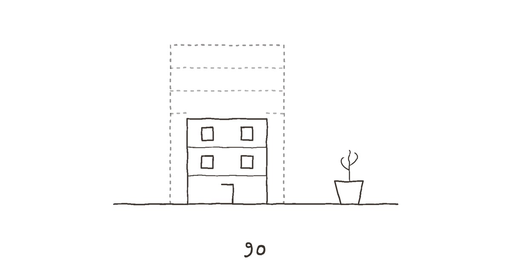
दहा
सोसायटीची जनरल बॉडी मीटिंग डिसेंबरच्या पहिल्या रविवारी होती — तळमजल्यावरच्या जोशी काकांच्या घरात, कारण 'स्नेहकुंज'ला सभागृह नव्हतं. बारा फ्लॅट, बारा कुटुंबं, आणि त्यांतली निम्मी माणसं सत्तरीच्या पुढची.
मीरा परत मुंबईला गेली होती. त्या शनिवारी रात्री ती आईच्या पलंगावर झोपली, मी दिवाणावर. सकाळी आम्ही गच्चीवर चहा घेतला, तुळशीला तिनं पाणी घातलं, आणि दुपारच्या गाडीनं ती गेली. स्टेशनवर मी गेलो. यावेळी गाडी सुटताना तिनं हात हलवला. मीही.
त्यानंतर आम्ही रोज रात्री बोलायचो. कधी पाच मिनिटं, कधी तासभर. ती तिच्या संस्थेतल्या मुलांबद्दल सांगायची — एक मुलगी जी बिहारहून आली होती आणि जिला मराठी, हिंदी, इंग्रजी तिन्ही येत नव्हतं, पण जी गणितात सगळ्यांच्या पुढे होती. मी तिला वह्यांबद्दल सांगायचो — रोज एक नवी पेन्सिलची ओळ. काही ओळी हसवणाऱ्या. 'आज यांनी चहात साखरेऐवजी मीठ घातलं. प्यायले. काही बोलले नाहीत. मीही नाही. दोघं हसलो नंतर, वेगवेगळ्या खोल्यांत.'
"तुझे बाबा," मीरा एका रात्री फोनवर म्हणाली, "मला वाटायचं ते कठोर आहेत. आता वाटतं, ते फक्त घाबरलेले होते."
"कशाला?"
"बोलायला. बोललं की ऐकावं लागतं. आणि ऐकलं की बदलावं लागतं."
मीटिंगमध्ये बिल्डरचा माणूस आला होता — तरुण, चकचकीत, हातात एक टॅब्लेट ज्यावर नव्या इमारतीची चित्रं होती. सात मजले, काचेची बाल्कनी, खाली पार्किंग, वर गच्चीवर बाग. 'स्नेहकुंज' हे नाव राहणार होतं, तो म्हणाला — सगळ्यांच्या भावनांचा आदर म्हणून.
जोशी काका पहिले बोलले. "माझ्या गुडघ्यांना आता हे जिने झेपत नाहीत. लिफ्ट हवी." त्यांच्या पत्नी, कुसुम काकू, म्हणाल्या, "पण दोन वर्षं भाड्याच्या घरात? या वयात?" तिसऱ्या मजल्यावरचे पटवर्धन — माझ्या वयाचे, अमेरिकेत मुलगा असलेले — म्हणाले, "विका आणि मोकळे व्हा. आम्ही तर विकणार."
मी मागे बसलो होतो, भिंतीला टेकून. श्रीकांतनं मला सकाळी फोन केला होता. "आज ठरव, अनिरुद्ध. ब्रोकर म्हणतो, रिडेव्हलपमेंटचं नक्की झालं की भाव वाढतील, पण खरेदीदार दोन वर्षं थांबायला तयार असेल असं नाही. आत्ता विकलास तर चांगली किंमत. पुढच्या वर्षी — कुणास ठाऊक."
रेवती माझ्या शेजारी बसली होती. ती भाडेकरू होती — तिचं घर पहिल्या मजल्यावरच्या गोखले काकूंच्या मुलीचं — म्हणून तिला मत नव्हतं. पण ती आली होती. "तुमच्या आई प्रत्येक मीटिंगला यायच्या," ती मला हळूच म्हणाली होती. "आणि शेवटी बोलायच्या. नेहमी शेवटी."
चर्चा दोन तास चालली. चहा आला, गेला. बिल्डरच्या माणसानं तीनदा तेच मुद्दे सांगितले. कुणीतरी कॉर्पसच्या रकमेवर वाद घातला, कुणीतरी भाड्याच्या भत्त्यावर. आणि मग जोशी काका, जे सेक्रेटरी होते, माझ्याकडे वळले.
"अनिरुद्ध, तुझं काय? सुमतीताईंचा फ्लॅट. तू विकणार असं ऐकलं."
सगळ्यांच्या नजरा माझ्याकडे वळल्या. बारा कुटुंबं — ज्यांपैकी बहुतेकांनी मला चड्डीत, सायकलवर, दहावीच्या निकालाच्या दिवशी, लग्नाच्या वरातीत पाहिलं होतं.
मी उठलो. काय बोलायचं, ते ठरवलं नव्हतं. पण मला आठवलं — रेवतीचं ते वाक्य. 'नेहमी शेवटी बोलायच्या.' आणि मला कळलं की आई शेवटी का बोलायची. कारण ती आधी ऐकायची. सगळ्यांचं.
"मी रिडेव्हलपमेंटला संमती देतो," मी म्हणालो. "जोशी काकांना लिफ्ट हवी. इमारतीला नवीन पाया हवा — आज सकाळी जिन्यात पाणी झिरपलं, तुम्ही पाहिलंत. हे होणं गरजेचं आहे."
बिल्डरचा माणूस हसला, टॅब्लेटवर काहीतरी टिपलं.
"पण मी फ्लॅट विकणार नाही."
खोलीत एक लहानशी कुजबुज. पटवर्धनांनी भुवया उंचावल्या. रेवतीनं माझ्याकडे पाहिलं नाही — ती समोर बघत होती — पण तिच्या खांद्यांतला ताण सैल झाला, असं मला वाटलं.
"नवी इमारत होईपर्यंत," मी पुढे म्हणालो, "मी या जुन्या घरात राहीन. मग दोन वर्षं भाड्यानं, सगळ्यांसारखं. आणि मग परत येईन. सातव्या मजल्यावर, किंवा पहिल्या, कुठेही. पण इथे."
कुसुम काकू पुढे झुकल्या. "सुमतीताई असत्या तर —" त्या थांबल्या, आणि मग हसल्या. "त्या म्हणाल्या असत्या, शेवटी याला अक्कल आली."
सगळे हसले. मीही.
बाहेर पडल्यावर श्रीकांतला फोन केला. त्यानं पहिल्या रिंगला उचलला.
"काय झालं?"
"मी विकत नाही."
पलीकडे शांतता. मग एक लांब सुस्कारा. "अनिरुद्ध, तू —"
"बाणेरचा फ्लॅट विकतोय," मी म्हणालो.
यावेळी शांतता जास्त लांब होती.
"काय?"
"तो फ्लॅट माझा होता, श्रीकांत. फक्त माझा. मीरा म्हणाली होती, आणि ती बरोबर होती. त्याच्या भिंती, त्याचे पडदे, त्याची शांतता — सगळं मी निवडलेलं. आणि त्या घरात मला झोप लागत नाही. इथे लागते." मी जिन्याच्या पायरीवर बसलो. "तुझ्या ब्रोकरला सांग. बाणेर. टू बीएचके, नववा मजला, पार्क व्ह्यू. चांगली किंमत येईल."
श्रीकांत बराच वेळ काही बोलला नाही. मग मला त्याचा हसण्याचा आवाज आला — मोठा, गोंगाटी, श्रीकांतचा.
"माधवीला सांगतो," तो म्हणाला. "ती म्हणेल, मी तुला आधीच सांगितलं होतं."
"तिनं सांगितलं होतं?"
"गेल्या महिन्यात. तू पुरणपोळ्यांचा डबा परत पाठवलास, त्यात एक लाडू होता — तू केलेला, वाकडा. ती म्हणाली, ज्या माणसानं आईच्या घरात बेसन भाजायला सुरुवात केलीय, तो ते घर विकणार नाही."
त्या रात्री मीराला फोन केला. सांगितलं.
ती बराच वेळ गप्प होती. मग म्हणाली, "बाणेर विकतोयस?"
"हो."
"त्या घरात माझं काहीच नाही, असं म्हणाले होते मी. रागात."
"तू बरोबर होतीस."
"मी नेहमी बरोबर नसते, अनिरुद्ध." तिच्या आवाजात हसू होतं. "त्या घरात सईची पहिली पावलं आहेत. गॅलरीतली ती कुंडी — जी मी लावली होती, आणि तू कधी पाणी घातलं नाहीस, आणि तरी ती जगली. ते माझं होतं."
"मग ती कुंडी मी इथे आणतो. आईच्या कुंड्यांच्या रांगेत."
पलीकडे पुन्हा शांतता. पण यावेळी ती शांतता वेगळी होती — भरलेली.
"आण," ती म्हणाली. "आणि तिला पाणी घाल. रोज."
मी फोन ठेवला. हॉलमध्ये आलो. खिळ्यावरच्या आरशात पाहिलं. दिव्याच्या पिवळ्या उजेडात माझा चेहरा — थकलेला, पण कुठेतरी हलका.
बाहेर रेवतीच्या दारातून टाइपिंगचा आवाज येत होता — जलद, न थांबता. जणू एखादं अडचणीचं वाक्य शेवटी सुटलं होतं.
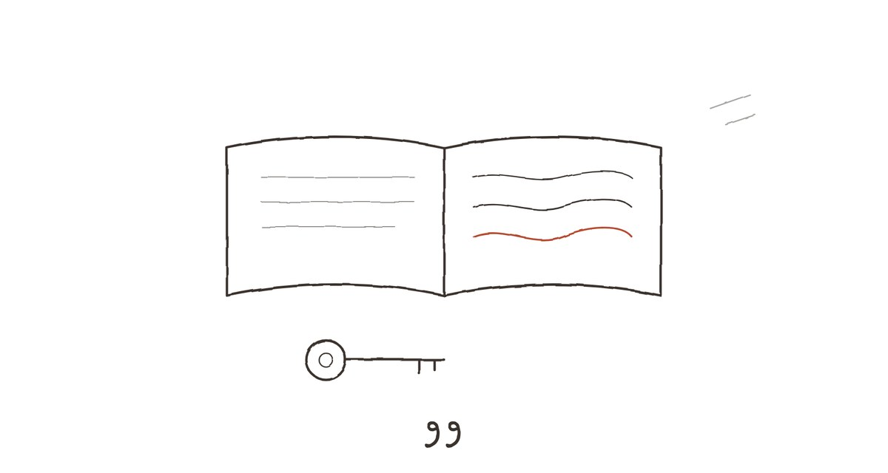
अकरा
रेवती जानेवारीच्या शेवटी गेली.
तिनं मला डिसेंबरच्या मध्यात सांगितलं — एका संध्याकाळी, पायरीवर, चहाच्या कपाकडे बघत. नेहमीसारखं, कुठलीही प्रस्तावना न करता.
"मी बर्लिनला जातेय."
माझ्या हातातला कप थांबला. "कायमचं?"
"माहीत नाही. एक वर्षाची फेलोशिप आहे — भाषांतरकारांसाठी. तिथे राहायचं, काम करायचं, इतर भाषांतरकारांबरोबर. मी तीन वर्षांपूर्वी अर्ज केला होता, आणि विसरून गेले होते. गेल्या आठवड्यात पत्र आलं."
"आणि —" मी थांबलो. काय विचारायचं ते कळेना.
"आणि तो तिथेच आहे, हो." रेवतीनं माझ्याकडे पाहिलं — तिच्या चेहऱ्यावर ते मोजणारं हसू नव्हतं, ते मोकळं हसूही नव्हतं. काहीतरी तिसरंच — शांत, थोडं घाबरलेलं. "मी त्याला ईमेल केलाय. वाढदिवस नसताना, नववर्ष नसताना. पहिल्यांदा. लिहिलंय की मी येतेय, आणि आपण भेटू. आणि मग ठरवू — एकदाचं. कागदपत्रांवर सही करायची की नाही."
"तुम्हाला काय हवंय?"
तिनं कप पायरीवर ठेवला. गुडघ्यांभोवती हात गुंडाळले. "मला माहीत नाही, अनिरुद्ध. आणि हेच — हेच तुमच्या आईंनी मला शिकवलं. की माहीत नसणं ठीक आहे. पण माहीत नाही म्हणून न जाणं — ते ठीक नाही." ती थांबली. "त्या कोल्हापूरला गेल्या, तेव्हा त्यांनाही माहीत नव्हतं. पण त्या गेल्या."
"आणि परत आल्या."
"हो. आणि त्या परत आल्या म्हणून त्यांचं जाणं खोटं ठरत नाही."
त्यानंतरचे सहा आठवडे विचित्र होते. रेवतीच्या घरातून टाइपिंगचा आवाज कमी झाला, आणि त्याजागी खोकी भरण्याचा, टेप ओढण्याचा, कागद फाडण्याचा आवाज आला. संध्याकाळी सहा वाजता ती अजूनही यायची — मारी बिस्किटं घेऊन — पण आता आम्ही पायरीवर कमी बसायचो. मी तिच्या खोक्यांवर नावं लिहायला मदत करायचो. 'पुस्तकं — जर्मन.' 'पुस्तकं — मराठी.' 'स्वयंपाकघर.' 'देऊन टाकायचं.'
'देऊन टाकायचं' खोक्यात तिनं बरंच काही ठेवलं — भांडी, कपडे, एक जुना रेडिओ, कुंड्या. कुंड्या तिनं गच्चीवर आईच्या कुंड्यांच्या रांगेत ठेवल्या. "तुम्ही पाणी घालाल," ती म्हणाली. प्रश्न नाही.
मीरा जानेवारीच्या दुसऱ्या आठवड्यात पुन्हा आली — दोन दिवसांसाठी. बाणेरच्या फ्लॅटचं सामान आवरायला. आम्ही दोघांनी मिळून ते केलं — काय ठेवायचं, काय द्यायचं, काय प्रभात रोडला आणायचं. सईची लहानपणीची खेळणी. आमच्या लग्नाचा अल्बम. गॅलरीतली ती कुंडी — एक तुळस, जी मी कधी पाणी न घालता जगली होती.
ती कुंडी मी रेवतीच्या कुंड्यांच्या शेजारी ठेवली. आईच्या रांगेत. आता रांगेत तीन बायकांच्या कुंड्या होत्या.
मीरा आणि रेवती त्या दोन दिवसांत खूप वेळ एकत्र होत्या. मी बाणेरहून सामान आणत असताना त्या दोघी गच्चीवर बसून बोलायच्या. एका संध्याकाळी मी जिन्यातून वर आलो तेव्हा त्या दोघी हसत होत्या — मोठ्यानं, डोळ्यांत पाणी येईपर्यंत. मी दिसताच थांबल्या.
"काय झालं?"
"काही नाही," मीरा म्हणाली, डोळे पुसत. "आईंच्या वहीतली एक ओळ. रेवतीनं वाचून दाखवली."
"कोणती?"
रेवतीनं मीराकडे पाहिलं. मीरानं रेवतीकडे. आणि त्या पुन्हा हसू लागल्या.
मला ती ओळ कधी सांगितली गेली नाही. आणि मला ते — विचित्रपणे — आवडलं. की माझ्या आईचं काहीतरी या दोन बायकांमध्ये होतं, जे माझं नव्हतं.
शेवटच्या संध्याकाळी — रेवतीची फ्लाईट दुसऱ्या दिवशी पहाटे होती — ती सहा वाजता आली. हातात मारी बिस्किटं नव्हती. हातात एक जाडसर, बांधलेलं हस्तलिखित होतं, आणि एक चावी.
आम्ही शेवटचं पायरीवर बसलो. तिचं घर आता रिकामं होतं — दार उघडं, आत पांढऱ्या भिंती, जमिनीवर धुळीचे चौकोन जिथे फर्निचर होतं. माझ्या आईचं घर मी पहिल्यांदा उघडलं होतं तेव्हासारखं.
तिनं चावी माझ्या हातात दिली. आईच्या घराची जास्तीची चावी. ती, जी आईनं तिला दिली होती — 'कधी काही झालं तर.'
"ही परत," ती म्हणाली.
मी ती हातात धरली. पितळेची, जुनी, कडांना झिजलेली. "मी म्हणालो होतो, असू दे."
"मला माहीत आहे. पण आता इथे कुणीतरी राहतंय, अनिरुद्ध. ज्याच्याकडे स्वतःची चावी आहे. ही चावी आता दुसऱ्या कुणाला द्या." तिनं माझ्याकडे पाहिलं. "कुणाला, ते तुम्ही ठरवा."
मला मीरा आठवली. तिची एक खोली, एक खिडकी, आणि लोकल ट्रेनची लाईन.
मग रेवतीनं ते हस्तलिखित माझ्या मांडीवर ठेवलं.
"हे काय?"
"गेली दोन वर्षं मी जे भाषांतर करत होते — तुमच्या आईंना जे वाचून दाखवायचे. एका जर्मन लेखिकेची कादंबरी. एका बाईची गोष्ट, जी एका लहान शहरात आयुष्यभर राहते आणि एके दिवशी, साठाव्या वर्षी, समुद्र पाहायला निघते. पहिल्यांदा." रेवती थांबली. "मी ते गेल्या आठवड्यात पूर्ण केलं. प्रकाशकाला पाठवलंय. पण ही पहिली प्रत तुमची."
मी पहिलं पान उलटलं. शीर्षकाखाली, रेवतीच्या तिरक्या, ठाम अक्षरात:
'सुमतीताईंना — ज्यांनी शब्दांचं वजन ऐकलं, आणि मला माझं भाषांतर हलकं होऊ दिलं नाही.'
मी ते वाक्य बराच वेळ वाचत राहिलो. अक्षरं धूसर झाली.
"त्यांनी कधी समुद्र पाहिला होता?" रेवतीनं हळू आवाजात विचारलं.
मी विचार केला. आठवेना. बाबांबरोबर कधी सुट्टीला गेल्याचं आठवत नव्हतं — बाबांना प्रवास आवडायचा नाही. मी मोठा झाल्यावर, नोकरीला लागल्यावर, एकदा म्हणालो होतो, आई, चल गोव्याला जाऊ. ती म्हणाली होती, बघू. 'बघू.' माझं वाक्य. माझं धुकं. तिच्याकडून आलेलं.
"नाही," मी म्हणालो. "मला वाटतं, नाही."
रेवतीनं मान हलवली. जणू तिला हे माहीत होतं. "म्हणून त्या ही कादंबरी इतकी लक्ष देऊन ऐकायच्या."
पहाटे चार वाजता तिची टॅक्सी आली. मी खाली गेलो — तिच्या दोन बॅगा उचलायला. गल्ली अंधारी आणि थंड होती, गुलमोहराच्या उघड्या फांद्यांवर दवाचे थेंब. टॅक्सीचा ड्रायव्हर झोपाळलेला.
रेवती टॅक्सीत बसण्याआधी वळली. आम्ही एकमेकांकडे पाहिलं. काय करायचं — हात मिळवायचा, नमस्कार, आणखी काही — कळलं नाही. आणि मग तिनं पुढे होऊन मला क्षणभर मिठी मारली. हलकी, लहान. आईच्या पावडरचा तो फिकट गुलाबी वास नाही — तिचा स्वतःचा. चंदन आणि कागद.
"तुळशीला पाणी," ती म्हणाली.
"रोज."
"आणि अनिरुद्ध —" ती टॅक्सीच्या दारात थांबली. "जेव्हा कुणी विचारेल, तू कसा आहेस, तेव्हा 'बघू' म्हणू नका."
टॅक्सी गेली. लाल दिवे गल्लीच्या टोकाला वळले आणि दिसेनासे झाले.
मी वर आलो. जिन्यात तिचं रिकामं दार उघडं होतं. मी ते लावलं — हळूच, आईसारखं. दारावरची ती कागदाची पाटी — 'रेवती देशपांडे', तिरक्या अक्षरात — अजून चिकटलेली होती. मी ती काढली नाही.
आत आलो. हिरव्या खुर्चीत बसलो. हस्तलिखित मांडीवर. आणि पहाट होईपर्यंत, खिडकीतला प्रकाश राखाडीचा पिवळा होईपर्यंत, मी ती कादंबरी वाचत राहिलो — एका बाईची, जी साठाव्या वर्षी समुद्र पाहायला निघते.
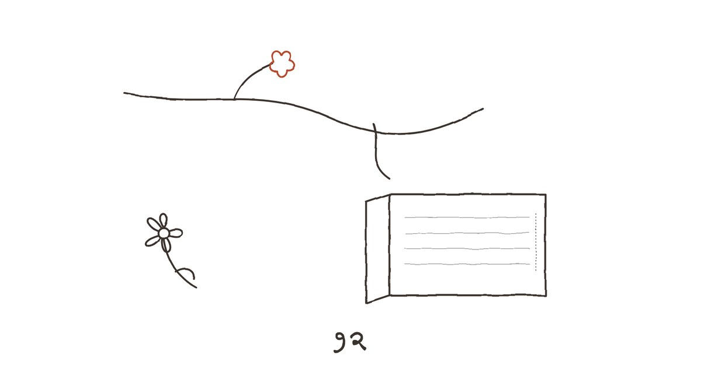
बारा
मार्चमध्ये गुलमोहराला पहिली कळी आली, आणि गच्चीवरचा मोगरा — आईचा, जो चार महिने कोमेजलेला होता — एका सकाळी पांढऱ्या फुलांनी भरून गेला.
मी ते पाहिलं तेव्हा तुळशीला पाणी घालत होतो. रोजसारखं. सकाळी सात. आईची तुळस, रेवतीच्या कुंड्या, मीराची तुळस — तीन रांगा, एकाच ओळीत. मी कॅन खाली ठेवला आणि मोगऱ्यासमोर बराच वेळ उभा राहिलो. वास आला — जड, गोड, आईच्या संध्याकाळच्या वेणीसारखा.
मी एक फूल तोडलं. खाली आलो. आणि ते आरशाच्या चौकटीत, नक्षीच्या एका फटीत खोचलं.
बाणेरचा फ्लॅट फेब्रुवारीत विकला गेला. श्रीकांतच्या ब्रोकरनं चांगली किंमत आणली — श्रीकांत म्हणाला, अपेक्षेपेक्षा चांगली, कारण तू घाई केली नाहीस. मी हसलो. आयुष्यात पहिल्यांदा कुणीतरी मला घाई न केल्याबद्दल शाबासकी दिली होती, आणि ती चुकीच्या कारणासाठी होती.
शेवटच्या दिवशी मी त्या फ्लॅटमध्ये एकटा गेलो. रिकामा. भिंतींवर फोटोंच्या जागी फिकट चौकोन. गॅलरीत मीराच्या कुंडीची एक गोल खूण. मी प्रत्येक खोलीत उभा राहिलो, थोडा वेळ. काहीच वाटलं नाही — दुःख नाही, सुटका नाही. फक्त एक प्रकारची ओळख. की हे एक घर होतं, ज्यात मी वीस वर्षं राहिलो, आणि ज्यात मी कधी पूर्णपणे आलोच नाही.
चावी सेक्रेटरीकडे दिली. लिफ्टनं खाली आलो. नवव्या मजल्यावरून तळमजल्यापर्यंत — चाळीस सेकंद. 'स्नेहकुंज'च्या जिन्यानं दुसऱ्या मजल्यापर्यंत चढायला मला एक मिनिट लागतो, आणि मध्ये तीन वेळा थांबावं लागतं — कुसुम काकूंशी बोलायला, पटवर्धनांच्या कुत्र्याला थोपटायला, आणि जिन्याच्या खिडकीतून गुलमोहर बघायला.
रेवतीचा पहिला ईमेल फेब्रुवारीच्या मध्यात आला. बर्लिनहून. लहान.
'इथे बर्फ आहे. सगळं पांढरं, शांत. मला संध्याकाळी सहा वाजता अजूनही पाय वळतात — कुठेतरी. इथे पायऱ्या नाहीत, लिफ्ट आहे. कादंबरी प्रकाशकानं स्वीकारली. पुढच्या दिवाळीला येईल. त्याला भेटले. आम्ही बोललो. खूप. अजून काही ठरलं नाही. पण यावेळी आम्ही दोघंही "बघू" म्हणत नाही. आम्ही म्हणतो, "पुढच्या आठवड्यात पुन्हा बोलू." आणि बोलतो. — र.
ता. क. तुळशीला पाणी?'
मी उत्तर लिहिलं. लगेच. ड्राफ्ट न ठेवता.
'रोज. मोगरा फुललाय. आईचा. एक फूल आरशात खोचलंय. — अ.'
सई होळीला आली. चार दिवस. यावेळी सांगून.
तिनं घरात पाऊल टाकलं आणि थांबली. हॉलकडे पाहिलं — तसाच होता, आणि तरी वेगळा. हिरवी खुर्ची, विणलेलं कव्हर, बाबांचा फोटो. पण फोटोच्या शेजारी आरसा, त्यात मोगऱ्याचं सुकलेलं फूल. आणि भिंतीला टेकून एक लहान पुस्तकांचं कपाट — नवीन — ज्यात आईच्या हिशोबाच्या वह्या रांगेत होत्या, वर्षाप्रमाणे, आणि त्यांच्या शेजारी रेवतीचं हस्तलिखित.
"आरसा सापडला," सई म्हणाली. प्रश्न नाही.
"आईकडे होता. तुझ्या."
सईनं माझ्याकडे वळून पाहिलं. तिच्या चेहऱ्यावर एक प्रश्न होता, जो तिनं विचारला नाही. पण मला कळला.
"ती बरी आहे," मी म्हणालो. "आम्ही रोज बोलतो. ती पुढच्या महिन्यात येतेय — आठवडाभर. मग मी जाणार आहे, मुंबईला. तिचं घर बघायला. एक खोली, एक खिडकी, आणि लोकल ट्रेनची लाईन."
"आणि मग?"
मी विचार केला. मग खरं सांगितलं.
"माहीत नाही, सई. खरंच माहीत नाही. कदाचित ती परत येईल. कदाचित मी तिथे जाईन, अधूनमधून. कदाचित आम्ही दोन शहरांत राहू आणि शनिवारी डेक्कन क्वीन पकडू. कदाचित असंच चालेल. पण आता आम्ही ते एकत्र ठरवतोय. आधी मी ठरवायचो — न बोलून. आता आम्ही बोलून ठरवतो." मी थांबलो. "आणि ते — ते पुरेसं आहे. सुरुवातीसाठी."
सई बराच वेळ माझ्याकडे पाहत राहिली. मग तिनं एक गोष्ट केली जी ती बारा वर्षांची असताना करायची, आणि त्यानंतर कधी नाही — ती पुढे आली आणि माझ्या गालावर ओठ टेकवले.
"बाबा," ती म्हणाली, "रेडिओ चालू झालाय."
एप्रिलच्या पहिल्या शनिवारी मी एक पार्सल पाठवलं. मुंबईला. पत्ता आता मला माहीत होता — गोरेगाव, एका जुन्या इमारतीत तिसरा मजला, खिडकीबाहेर लोकलची लाईन.
पार्सलमध्ये तीन गोष्टी होत्या.
बेसनाचे लाडू — 'अनि' लिहिलेल्या डब्यात. यावेळी गोल, एकसारखे. मंद आचेवर, धीरानं भाजलेले. मला आता जमत होतं.
एक छोटी, पितळेची, जुनी चावी. कडांना झिजलेली. आईच्या घराची जास्तीची चावी — जी आईनं रेवतीला दिली होती, 'कधी काही झालं तर', आणि जी रेवतीनं मला परत केली होती, 'दुसऱ्या कुणाला द्या.'
आणि एक चिठ्ठी. मी ती तीन वेळा लिहिली — खोडण्यासाठी नाही, तर अक्षर नीट यावं म्हणून.
'मीरा — ही चावी तुझी. घराची. कधी काही झालं तर — नाही. काही न झालं तरी. कधीही. बेल वाजवू नकोस. दार आतून उघडायची वाट बघू नकोस. मी इतकी वर्षं ते करायला लावलं. आता तू स्वतः फिरव. — अ.
ता. क. मी कसा आहे, असं विचारलंस तर — बरा आहे. बहुतेक दिवस. आणि ज्या दिवशी नसेन, त्या दिवशी तुला सांगेन.'
दोन दिवसांनी तिचा फोटो आला. व्हॉट्सअॅपवर. तिच्या खिडकीचा कट्टा — त्यावर पितळेची चावी, आणि मागे, धूसर, एक जाणारी लोकल ट्रेन. खाली एकच ओळ:
'फिरवली. मनात. पुढच्या शनिवारी खरी फिरवीन.'
त्या रात्री मी एक नवी वही आणली. जवळच्या दुकानातून — स्वस्त, तपकिरी कव्हरची, आत रेघा. शाळेतल्यासारखी. आईच्या वह्यांसारखी.
कव्हरवर वर्ष लिहिलं.
आत पहिल्या पानावर तारीख. आणि रकाने. 'दूध — ३२ रु.' 'भाजी — ८० रु.' 'मोगऱ्यासाठी खत — ४५ रु.' 'मुंबईचं तिकीट — डेक्कन क्वीन.'
मग पेन्सिल घेतली. आणि पानाच्या कडेला, अगदी बारीक, फिकट — इतकं की कुणाला आधी दिसणारच नाही — पहिली ओळ लिहिली.
काय लिहिलं, ते सांगणार नाही. आईनं कधी सांगितलं नाही. ती ओळ माझी आहे — आणि कधीतरी, कुणीतरी, ही वही उघडेल, भाजीचे भाव वाचेल, आणि मग, कदाचित, कडेला पाहील.
मी वही बंद केली. खिळ्यावरच्या आरशात पाहिलं. सुकलेल्या मोगऱ्याच्या फुलामागे माझा चेहरा — पन्नाशीचा, थकलेला, केस पांढरे होत चाललेले. आणि त्या डोळ्यांत, ज्यात मी चार महिन्यांपूर्वी काहीतरी अनोळखी पाहिलं होतं — ते आता अनोळखी नव्हतं.
आईचं घर रिकामं झालं नव्हतं. ते उरलं होतं. भिंतींत तिची वाक्यं, डब्यांवर तिचं अक्षर, गच्चीवर तिचा मोगरा, कपाटात तिच्या पेन्सिलच्या ओळी. आणि त्या उरलेल्यात, हळूहळू, आणखी काहीतरी जमा होत होतं — रेवतीची कुंडी, मीराची तुळस, सईचं हसू, माझी पहिली पेन्सिलची ओळ.
घर म्हणजे भिंती नाहीत, हे मला माहीत होतं. घर म्हणजे माणसं, असंही लोक म्हणतात. पण मला आता वाटतं, घर म्हणजे ते — जे माणसं गेल्यानंतरही उरतं. आणि जे उरलेलं आपण कसं जगतो, त्यावर ठरतं की पुढचं कोण येईल, आणि ते किती काळ थांबेल.
मी दिवा मालवला. बाहेर गल्लीत गुलमोहराची पहिली लाल कळी, रस्त्याच्या दिव्याच्या उजेडात, जवळजवळ काळी दिसत होती.
उद्या ती उमलेल. मीराला सांगायचं होतं — कोणत्या फांदीवर.
— समाप्त —